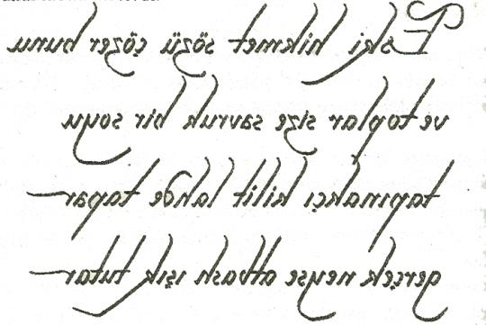
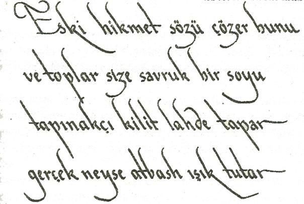

Sophie, ona baktı. "Yani Hıristiyan Kilisesi'nin bir kadın tarafından devam ettirileceğini mi söylüyorsunuz?"
"Plan buydu. İsa ilk feministti. Kilisesinin Magdalalı Meryem'e emanet edilmesini istemişti."
Son Akşam Yemeği'ne işaret eden Langdon, "Ve Petros'un bu konuda bir rahatsızlığı vardı," dedi.
"Buradaki Petros. Da Vinci'nin onun Magdalalı Meryem'e duyduğu hislerin bilincinde olduğunu anlayabilirsin."
Sophie'nin bir kez daha nutku tutulmuştu. Resimde Petros tehditkâr bir şekilde Magdalalı Meryem'e doğru eğiliyor ve bıçak gibi tuttuğu eliyle onun boynunu kesiyormuş gibi yapıyordu. Kayalıklar Bakiresi
'ndeki aynı tehditkâr el hareketi!
Petros'un yanındaki havarileri işaret eden Langdon, "Ve burada," dedi. "Biraz netameli gibi, değil mi?"
Sophie gözlerini kısarak baktığında, havarilerin arasından bir el çıktığını gördü. "Bu el bir hançer mi tutuyor?"
"Evet. Yine de biraz garip, eğer kolları sayarsan bu elin... hiç kimseye ait olmadığını göreceksin.
Vücudu yok. Belirsiz."
Sophie'nin aklı fazlasıyla karışmıştı. "Affedersiniz, ben tüm bunların Magdalalı Meryem'i nasıl Kutsal Kâse yaptığını hâlâ anlayamadım?"
Teabing yeniden, "Aha!" diye bağırdı. "İşte asıl mesele de bu!" Bir kez daha masaya dönerek, geniş
bir çizelge çıkarttı ve Sophie'nin önüne açtı. Ayrıntılı bir şecere görülüyordu. "Çok az kişi Magdalalı
Meryem'in İsa'nın sağ kolu olmasının yanı sıra, zaten güçlü bir kadın olduğunu bilir."
Sophie şimdi soyağacının başlığını görebiliyordu.
B E N J A M I N A İ L E S İ
Soyağacının üst kısımlarında bir yeri gösteren Teabing, "Magdalalı Meryem burada," dedi.
Sophie şaşırmıştı. "Benjamin Hanedanı'ndan biri miydi?" Teabing, 'Tamamen," dedi. "Magdalalı
Meryem soylu biriydi." "Ama ben Magdalalı Meryem'in fakir olduğu izlenimini edinmiştim." Teabing başını
iki yana salladı. "Güçlü aile bağlarının kanıtlarını yok etmek için Magdalalıyı bir fahişe gibi tanıtmışlardı."
Sophie kendini yeniden Langdon'a bakarken buldu, o da tekrar başını salladı. Sonra Teabing'e döndü. "Peki ama Magdalalı Meryem'in soylu olmasının eski kilise için ne gibi bir sakıncası vardı?"
Britanyalı gülümsedi. "Sevgili çocuğum, kiliseyi bu kadar kaygılandıran Magdalalı Meryem'in soylu olması değil, yine soylu bir kan taşıyan İsa ile birlikte olmasıydı. Bildiğin gibi Matta İncil'inde bize Mesih'in Davut Hanedanı'ndan geldiği söylenir. Aynı zamanda Kral Süleyman'ın -Yahudi Kralı- torunudur. İsa, güçlü Benjamin Hanedanı'ndan biriyle evlenerek iki soylu kanı birbirine harmanlamış oldu, böylece tahtta yasal iddia edebilecek ve Süleyman zamanında olduğu gibi krallıkları canlandıracak potansiyel bir siyasi birlik yaratmıştı."
Sophie sonunda onun bunu asıl konuya bağlayacağını sezinlemişti.
Teabing şimdi heyecanlı görünüyordu. "Kutsal Kâse efsanesi, asil kanı anlatan bir efsanedir. Kâse hikâyesinde bahsedilen 'İsa'nın kanı ile dolu olan kadeh' ...aslında Magdalalı Meryem'i anlatır... Mesih'in soylu neslini taşıyan kadın rahmini."
Kelimeler Sophie'nin aklına kazınmadan önce balo salonunda yankılanarak geri dönmüş gibiydi.
Magdalalı Meryem, İsa Mesih'in soylu neslini mi taşıyordu? "Ama İsa'nın nasıl nesli olur, onların?..."
Durup Langdon’a baktı.
Langdon tebessüm etti. "Çocukları olmalıydı."
Sophie donup kalmıştı.
Teabing, "Şuraya bakın," diye veryansın etti. "İnsanlık tarihindeki en büyük örtbas buydu. İsa Mesih evlenmekle kalmamış, aynı zamanda baba olmuştu. Tatlım, Magdalalı Meryem, Kutsal Kâse'ydi. İsa Mesih'in asil nesli ile dolu olan kadehti. Soyu taşıyan rahim ve kutsal meyvenin çıktığı üzüm bağıydı."
Sophie kollarındaki tüylerin diken diken olduğunu hissediyordu. "Ama bu kadar büyük bir sır, bunca yıl boyunca nasıl saklı kalmış?"
Teabing, 'Tanrı aşkına!" dedi. "Kesinlikle saklı tutulmadı! İsa Mesih'in soylu nesli, tüm zamanların en çok anlatılan efsanesidir... Kutsal Kâse. Magdalalı Meryem'in hikâyesi yüzyıllarca her türlü mecaz ve lisan kullanılarak avaz avaz dünyaya ilan edildi. Gözlerini açtığın anda onun hikâyesini her yerde görebilirsin."
Sophie, "Peki Sangreal Belgeleri?" diye sordu. "Onlar da Mesih'in soylu neslini ispatlıyorlar mı?"
"Evet."
"O halde Kutsal Kâse efsanesi tamamıyla soylu nesille ilgili."
Teabing, "Harfi harfine," dedi. " Sangreal kelimesi San Greal'den gelir... ya da Kutsal Kâse'den. Ama Sangreal kelimesinin en eski bölünme şekli farklıydı." Teabing bir müsvedde kâğıdına yazarak, Sophie'ye uzattı.
Sophie, onun yazdığını okudu.
S a n g R e a 1
Sophie o anda tercümeyi fark etmişti.
Sang Real aslında Asil Kan anlamına geliyordu.
59
New York'taki Lexington Caddesi'nde bulunan Opus Dei merkezinin lobisindeki erkek resepsiyon görevlisi telefonda Piskopos Aringarosa'nın sesini duyunca şaşırmıştı. "İyi geceler efendim."
Alışılmadık bir şekilde endişeli konuşan piskopos, "Bana mesaj bırakan oldu mu?" diye sordu.
"Evet efendim. Aradığınıza çok memnun oldum. Size dairenizden ulaşamadım. Yarım saat kadar önce acil bir telefon mesajı aldınız."
"Öyle mi?" Aldığı haberle rahatlamış gibiydi. "Arayan kişi ismini bıraktı mı?"
"Hayır efendim, sadece bir numara." Santral numarayı verdi.
"Ülke kodu otuz üç mü? Fransa'nın kodu öyle değil mi?"
"Evet efendim, Paris arayan kişi onunla hemen bağlantı kurmanızın çok önemli olduğunu söyledi."
"Teşekkür ederim. Bu telefonu bekliyordum." Aringarosa görüşmeyi, hemen bitirdi.
Resepsiyon görevlisi ahizeyi yerleştirirken, Aringarosa'nın telefon hattından neden cızırtılı sesler geldiğini merak etti. Piskoposun günlük planı, onun bu hafta sonu New York'ta olacağını gösteriyordu ama sesi dünyanın bir ucundan geliyor gibiydi. Resepsiyon görevlisi omuzlarını silkti. Piskopos Aringarosa son birkaç aydır oldukça tuhaf davranıyordu.
Fiat, Roma’daki Ciampino Charter Havaalanı'na yaklaşırken Aringarosa, cep telefonum çekmemiş
olmalı, diye düşündü. Öğretmen bana ulaşmaya çalışıyordu. Aringarosa telefonu kaçırdığı için endişelenmekle beraber, Öğretmen'in Opus Dei merkezini aramakta sakınca görmememden işaret almıştı.
Bu gece Paris'te işler yolunda gitmiş olmalı.
Aringarosa numarayı çevirirken, yakında Paris'te olacağı için canlanıyordu. Şafak sökmeden ayak basmış olacağım. Aringarosa'nın kiraladığı uçak Fransa'ya gitmek için onu bekliyordu. Bu saatte ticari havayolu şirketlerini kullanmayı düşünemezdi, özellikle de evrak çantasındakileri gözönünde bulundurduğunda.
Hat çalmaya başlamıştı.
Bir kadın sesi cevap verdi. " Direction Centrale Police Jııdiciaire"
Aringarosa tereddüt etti. Bu beklenmedik bir şeydi. "Ah, evet... Benden bu numarayı aramam istenmiş."
Kadın, " Qui étes-vous? " dedi. "İsminiz?"
Aringarosa ismini verip vermemek konusunda kararsızdı. Fransa adli polisi mi?
Kadın, "İsminiz monsieur?" diye ısrar etti.
"Piskopos Manuel Aringarosa."
" Un moment. " Hatta bir klik sesi duyuldu.
Uzun bir bekleme süresinin ardından, sert ve kaygılı sesiyle bir başka adam telefonu cevapladı.
"Piskopos, sonunda size ulaştığıma çok memnun oldum, Sizinle tartışmamız gereken pek çok konu var."
60
Sangreal... Sang Real... San Greal... Asil Kan... Kutsal Kâse.
Hepsi iç içe geçmişti.
Kutsal Kâse Magdalalı Meryem... İsa Mesih'in asil soyunun annesi. Sophie sessiz balo salonunda durup Robert Langdon'a bakarken, yeni bir dalganın zihnini karıştırmaya başladığını hissediyordu.
Teabing ile Langdon bu gece masaya ne kadar delil koyarsa, bulmaca o kadar belirsizleşiyordu.
Bir kitap rafını karıştıran Teabing, "Anlayacağın hayatım," dedi. "Kutsal Kâse hakkındaki gerçeği dünyaya anlatmak isteyen tek kişi Leonardo değildi. İsa Mesih'in asil soyu, çok sayıda tarihçi tarafından geniş kapsamlı biçimde anlatılmıştır." Parmağını düzinelerce kitabın üstünde gezdirdi.
Başını yana eğen Sophie kitap isimlerine göz gezdirdi.
TAPINAKÇI KEŞFİ:
İsa'nın Gerçek Kimliğinin Gizli Bekçileri
KAYMAKTAŞI KAVANOZU TAŞIYAN KADIN:
Magdalalı Meryem ve Kutsal Kâse
DİZELERDEKİ TANRIÇA
Kutsal Dişiyi Geri İstemek
Kitapların arasından kalın kapaklı, yırtık pırtık birini çıkarıp, Sophie'ye uzatan Teabing, "En çok duyulanı bu olmalı," dedi. Kapakta şöyle yazıyordu:
KUTSAL KAN, KUTSAL KÂSE
Alkışlanan Uluslararası En Çok Satan
Sophie başını kaldırıp baktı. "Uluslararası en çok satan mı? Ben bunu hiç duymadım."
"Sen daha küçüktün. Bin dokuz yüz seksenlerde ortalığı fena halde karıştırmıştı. Bana göre yazarlar incelemelerinde bazı belirsiz boşluklar bırakmış ama temel iddiaları oldukça kuvvetli, ayrıca sonunda İsa'nın bir nesli olduğu fikrini açığa çıkarmış oldular."
"Kilisenin bu kitaba tepkisi nasıl oldu?"
"Elbette çok öfkelendiler. Ama bu beklenen bir şeydi. Her şeyde önce, Vatikan bu sırrı dördüncü
yüzyılda örtbas etmeye çalışmıştı. Haçlı Seferleri'nin bir sebebi de buydu. Bilgileri toplayıp, yok etmek.
Magdalalı Meryem'in eski kilisenin erkeklerine karşı oluşturduğu tehdit yıkıcıydı Mesih'in kilise kurma görevini verdiği kadın olmakla kalmıyor, kilisenin yeni ilan ettiği ilahın aslında ölümlü nesiller dünyaya getirdiğinin fiziksel ispatını taşıyordu. Magdalalı Meryem'in gücüne karşı kendini korumak isteyen kilise, onu bir fahişe olarak tanıttı ve İsa'nın onunla evlendiğine dair tüm delilleri sakladı. Böylece İsa'nın yaşayan vârisleri bulunduğu ve ölümlü bir peygamber olduğunu iddia edecek kimse kalmayacaktı."
Sophie başını sallayan Langdon'a baktı. "Sophie bunu doğrulayan tarihi deliller oldukça sağlam."
Teabing, "İtiraf etmeliyim ki," dedi. "İddialar müthiş ama bu örtbas olayına başvurmak için kiliseyi harekete geçirecek güçlü unsurlar vardı. Halkın kanbağını öğrenmesi durumunda, kilisenin sürekliliği mümkün değildi. Mesih'in bir çocuğunun var olması, İsa'nın Tanrısallığına ve dolayısıyla kendini, Tanrı
katına ulaşmanın ve cennet krallığına girmenin tek yolu olarak ilan eden Hıristiyan Kilisesi'ne zarar verecekti."
Aniden Teabing'in kitaplarından birinin sırtını işaret eden Sophie, "Beş yapraklı gül," dedi. Gül ağacı
kutunun üstündeki kabartmayla aynı desen.
Langdon'a göz atan Teabing sırıttı. "Gözünden hiçbir şey kaçmıyor. Yeniden Sophie'ye döndü. "Bu tarikatın Kâse sembolüdür. Magdalalı Meryem. İsmi kilise tarafından yasaklandığı için onu pek çok gizli takma isimle andılar Kadeh, Kutsal Kâse ve Gül." Durdu. "Gülün, Venüs'ü' beş köşeli yıldızı ve kılavuz Pusula Gülü'yle bağları vardır. Bu arada kelimesi İngilizce, Fransızca, Almanca ve diğer pek çok dilde birbirine benzer."
Langdon, "Gül," diye ilave etti. "Aynı zamanda Eros'un anagramıdır, yunan cinsel aşk tanrısı.'
Teabing konuşmaya devam ederken, Sophie, Langdon'a hayretle baktı.
"Gül, daima dişi cinselliğinin en önemli sembolü olmuştur. İlkel tanrıça mezheplerinde beş yaprak, dişi hayatının beş evresini temsil ederdi... Doğum, âdet, annelik, menopoz ve ölüm. Modern çağlarda çiçek açan gülün, kadınlıkla olan bağlarının çok daha görsel olduğu kabul edildi." Robert'a bir göz attı. "Belki bunu simgebilimcimiz açıklayabilir."
Robert tereddüt ediyordu. Fazlasıyla uzun sürmüştü.
Teabing, "Ah, Tanrım," diye yakındı. "Siz Amerikalılar fazlasıyla erdemlik taslıyorsunuz." Yeniden Sophie'ye baktı. "Robert'ın gevelediği şey, açmakta olan çiçeğin kadın cinsellik organına benzediği, insanoğlunun dünyaya adım attığı yüce çiçek. Georgia O'Keeffe'nin resimlerini görmüşsen, ne demek istediğimi anlarsın."
Yeniden kitap rafını işaret eden Langdon, "Burada asıl konu," dedi. Tüm bu kitapların aynı tarihi iddiayı ispatladığı."
"İsa bir babaydı." Sophie hâlâ emin olamıyordu.
Teabing, "Evet," dedi. "Ve Magdalalı Meryem, onun asil soyunu taşıyan rahimdi. Sion Tarikatı
günümüze kadar Magdalalı Meryem'e Tanrıça, Kutsal Kâse, Gül ve İlahi Anne olarak tapmıştır."
Sophie'nin aklına yeniden bodrum katında gördüğü ayin gelmişti.
Teabing, 'Tarikata göre," diyerek devam etti. "Çarmıh olayı sırasında Magdalalı Meryem hamileydi. İsa'nın doğmamış çocuğunun güvenliği için Kutsal Topraklar'dan*
kaçmaktan başka çaresi yoktu. Mesih'in güvendiği amcası Arimatea'lı Yusuf un yardımıyla Magdalalı
Meryem, o zamanlar gizlice Gaul olarak bilinen Fransa'ya gelmişti. Oradaki Yahudiler arasında kendine sığınacak güvenli bir yer buldu. Kızına doğum yaptığı yer orası, yani Fransa'ydı. İsmi Sarah idi."
Sophie başını kaldırıp baktı. "Çocuğun ismini gerçekten biliyorlar mı?"
“Bundan çok daha fazlası biliniyor. Yahudi koruyucular Magdalalı ile Sarah'nın hayatlarını dikkatle inceleyip kaleme almışlardı. Magdalalının çocuğunun Yahudi kralları -Davut ve Süleyman- soyundan geldiğini unutmamak gerekir. Bu yüzden Fransa'daki Yahudiler Magdalalılın kutsal asaleti olduğunu kabul ettiler ve ona soylu kralların atası olarak gösterdiler. O dönemde sayısız alim Magdalalı Meryem'in Fransa'da geçirdiği günleri, Sarah'nın doğumu ve gelecek kuşakların aile ağacı dahil olmak üzere, tarihsel bir dille yazmıştı."
Sophie şaşkına dönmüştü. "İsa Mesih'in soyağacı mı var?"
"Doğru. Ayrıca Sangreal Belgeleri'nin köşe taşlarından biri olduğu düşünülüyor. İsa'nın ilk torunlarının tam şeceresi."
Sophie, "Ama İsa'nın torunlarını yazan bir şecere varsa ne olacak yani?" diye sordu. "Bu hiçbir şeyi kanıtlamaz. Tarihçiler doğruluğunu ispatlayamazlar."
Teabing kendi kendine güldü. "İncil'in gerçekliğini ispatlayamayacakları gibi."
"Yani?"
"Yani tarih daima kazananlar tarafından yazılır. İki kültür çarpıştığında, kaybeden silinir ve tarih kitaplarını kazanan taraf yazar... kendi davalarını yücelten ve kaybeden düşmanı küçük düşüren bir tarih.
Napolyon bir zamanlar, 'Tarih, üzerinde anlaşmaya varılan bir masaldan başka nedir ki?' demişti."
Gülümsedi. "Tarih, yapısı itibariyle daima tek taraflı bir tutanaktır."
Sophie hiç böyle düşünmemişti.
"Sangreal Belgeleri, İsa hikâyesinin diğer yüzünü anlatır. Sonunda hikâyenin hangi tarafına inanacağın imanına ve kişisel takdirine bağlıdır, ama en azından bilgiler günümüze kadar gelmiştir. Sangreal Belgeleri, on bin sayfalık bilgi içerir. Sangreal hazinesinin görgü tanıkları, dört dev kasada taşındıklarını
söylemişlerdir. Bu kasalarda Purist Belgeleri 'nin olduğu sanılmaktadır... İsa'nın ilk inanları tarafından yazılan, Constantine öncesi değiştirilmemiş binlerce sayfalık belge. İsa'dan tamamıyla insan bir öğretmen ve peygamber diye bahsediyorlardı. Ayrıca hazinenin bir kısmının efsanevi 'Q' Belgeleri 'nden -Vatikan'ın bile var olduğuna inandığını itiraf ettiği el yazmaları- oluştuğu söylentiler arasındadır İddia edildiğine göre, kendi el yazısıyla yazılmış İsa öğretileri."
"İsa'nın kendi el yazısı mı?"
Teabing, "Elbette," dedi. "Mesih kendi papazlığının tarihini neden tutmasın? O günlerde pek çok kişi bunu yapardı. Hazinenin içinde inanılan bir başka belge de Magdalalı Günlüğü diye bilinen el yazmaları.
Magdalalı Meryem'in İsa ile olan ilişkisini, çarmıha gerilişini Fransa'da geçirdiği günleri anlatan kendi yazıları."
Sophie bir süre sessiz kaldı. "Bu dört sandık belge, Tapınak Şövalye'nin Süleyman Mabedi'nin altında bulduğu hazine mi?"
"Kesinlikle. Şövalyeleri bu denli güçlü kılan belgeler. Tarih boyunca sayısız Kâse araştırmasına konu olan belgeler."
"Ama Kutsal Kâse'nin Magdalalı Meryem olduğunu söylemiştiniz. eğer insanlar belgeleri arıyorlarsa, neden Kutsal Kâse'yi aradıklarını söylüyorsunuz?"
Teabing göz ucuyla ona bakarken, ifadesi yumuşuyordu. "Çünkü Kutsal Kâse'nin saklandığı yerde bir lahit var."
Dışarıda rüzgâr ağaçlar arasında uğulduyordu.
Teabing artık daha alçak sesle konuşuyordu. "Kutsal Kâse arayışı, aslında Magdalalı Meryem'in kemikleri önünde diz çökme arayışıdır. Dışlanan birinin, kayıp kutsal dişinin ayakları dibinde dua etmek için çıkılan bir yolculuk."
Sophie birden meraklanmıştı. "Kutsal Kâse'nin saklandığı yer... bir mezar mı?"
Teabing'in ela gözleri buğulanmıştı. "Öyle. Magdalalı Meryem'in cesedinin ve onun gerçek hayat hikâyesi yazan belgelerin bulunduğu bir mezar. Kutsal Kâse arayışı, her zaman için Magdalalı arayışı
olmuştur. Suçlanan Kraliçe, ailesinin haklı iktidar talebinin kanıtıyla birlikte gömüldü."
Teabing kendini toparlarken, Sophie biraz düşündü. Büyükbabası hakkındaki bunca şey hâlâ bir anlam ifade etmiyordu. Sophie sonunda, "Tarikat üyeleri," dedi. "Bu kadar yıl süresince, Sangreal Belgeleri'yle Magdalalı Meryem'in mezarını korumak görevini mi yerine getirdi?"
“Evet, ama kardeşliğin daha önemli bir görevi daha vardı... nesli korumak. İsa'nın soyu sürekli tehlike altındaydı. Eski kilise, onun neslinin artmasından, Mesih ile Magdalalı sırrının açığa çıkmasından ve temel öğretilerine meydan okumasından korkuyordu... kadınlarla arkadaşlık etmeyen ve cinsel ilişki kurmayan ilahi bir Mesih." Duraksadı. “Her şeye karşın İsa'nın nesli, on beşinci yüzyıldaki cesur bir harekete kadar Fransa’da gizlice çoğaldı. Fransız asillerinden biriyle evlenildi ve Merovingian Hanedanı diye bilinen bir soy oluştu."
Bu haber Sophie'yi şaşırtmıştı. Fransa'daki her öğrenciye Merovingia terimi öğretilirdi.
"Merovingianlar Paris'i kurdular."
"Evet. Kâse efsanesinin Fransa'da bu kadar ünlü olmasının nede de bu. Vatikan'ın Kâse arayışları, aslında bu asil hanedan üyelerini gizlice yok etme girişimleridir. Kral Dagobert'i duydun mu?"
Sophie bu ismi tarih dersindeki tüyler ürpertici bir hikâyeden şöyle böyle hatırlıyordu. "Dagobert bir Merovingian kralıydı, öyle değil mi? Uyurken gözlerinden hançerlenmişti."
"Kesinlikle. Vatikan'ın Pepin d'Heristal ile ortak suikast girişimi, On yedinci yüzyıl sonları. Dagobert'in cinayetiyle Merovingian Hanedanı neredeyse yok oluyordu. Bereket versin ki, Dagobert'in oğlu Sigisbert saldırıdan kaçmayı başarmış ve nesli devam ettirmişti. Aileye daha sonra Godefroi de Bouillon da eklenmişti... Sion Tarikatı'nın kurucusu."
Langdon, 'Tapınak Şövalyeleri'ne," dedi. "Sangreal Belgeleri'ni Süleyman Mabedi'nin altından almalarını söyleyen adam. Böylece Merovingianların İsa Mesih ile kan bağı olduğunun ispatını elinde bulunduracaktı."
İçini ağır ağır çeken Teabing başını salladı. "Günümüzdeki Sion Tarikatı'nın ciddi bir vazifesi var.
Onların yükü üç katı ağır. Kardeşlik Sangreal Belgeleri'ni korumak zorunda. Magdalalı Meryem'in mezarını korumak zorundalar. Ve elbette İsa soyunu yetiştirip, korumak zorundalar... Merovingian Hanedanı'ndan günümüze kadar gelen birkaç soylu üyeyi."
Kelimeler boşlukta asılı kaldı. Sophie kemikleri yeni bir tür gerçekle yankılanıyormuş gibi tuhaf bir titreme hissetti. Günümüze kadar yaşamış olan İsa torunları. Büyükbabasının sesi yine kulağına fısıldamaya başlamıştı. Prenses, sana ailen hakkındaki gerçeği anlatmalıyım.
Vücudunu bir ürperti kapladı.
Asil kan.
İnanamıyordu.
Prenses Sophie.
"Sir Leigh?" Uşağın kelimeleri duvardaki dahili haberleşme sisteminden cızırdayarak yükseldiğinde Sophie yerinden sıçradı. "Acaba mutfakta bana bir süre eşlik edebilir misiniz?"
Teabing vakitsiz kesinti yüzünden kaşlarını çattı. Cihazın yanına düğmeye bastı. "Rémy, bildiğin gibi misafirlerimle ilgileniyorum. Eğer mutfaktan başka bir şeye ihtiyaç duyarsak kendimiz alabiliriz.
Teşekkürler ve iyi geceler."
"Odama çekilmeden önce sizinle görüşmem gerekiyor efendim. Lütfen."
Teabing söylenerek düğmeye bastı. "Çabuk ol Rémy."
"Evle ilgili bir mesele efendim. Misafirlerin duyması hoş olmayabilir."
Teabing inanamıyormuş gibi bakıyordu. "Sabaha kadar bekleyemez mi?"
"Hayır efendim. Sorum bir dakikanızı bile almayacak."
Teabing gözlerini yuvarlayarak Langdon ile Sophie'ye baktı. "Bazen kimin kime hizmet ettiğini merak ediyorum." Düğmeye yeniden bastı. "Hemen geliyorum Remy. Gelirken bir şey getirmemi ister misin?"
"Sadece baskıdan kurtaracak özgürlük efendim."
"Remy hâlâ yanımda çalışmanın tek sebebinin çok lezzetli biberli bonfile pişirmek olduğunun farkında mısın?"
"Teveccühünüz efendim. Teveccühünüz."
61
Prenses Sophie.
Teabing'in koltuk değneklerinin koridorda giderek azalan tıkırtılarını dinlerken, Sophie içinden bir şeylerin koptuğunu hissediyordu. Uyuşmuş bir halde arkasını dönünce, boş balo salonunda Langdon ile karşılaştı. Langdon, onun aklını okuyormuşçasına, başını iki yana sallıyordu.
"Hayır Sophie," diye fısıldarken, gözleriyle adeta onu temin ediyordu. "Büyükbabanın tarikatta olduğunu ve sana ailen hakkında bir sır vermek istediğini öğrendiğimde aynı düşünce benim de aklımdan geçti. Ama bu imkânsız." Langdon durdu. "Sauniére bir Merovingian ismi değil."
Sophie rahatlaması mı yoksa hayal kırıklığı duyması mı gerektiğine karar veremedi. Daha önce Langdon, ona annesinin genç kızlık soyadı gibi alışılmadık bir soru sormuştu. Chauvel. Sorunun anlamı
şimdi ortaya çıkmıştı. Gergin bir ifadeyle, "Peki ya Chauvel?" diye sordu.
Langdon bir kez daha başını iki yana salladı. "Üzgünüm. Bunun senin için bazı soruları cevaplayacağını
biliyorum. Merovingianların sadece iki bağlantısı kaldı. Onların da soy isimleri Plantard ve Saint-Clair.
Her iki aile de saklanıyor, tarikat tarafından korunuyor olmalılar."
Sophie isimleri içinden tekrarladıktan sonra başını hayır anlamında salladı. Ailesinde Plantard ya da Saint-Clair adında kimse yoktu. Şimdi akıntıya karşı kürek çektiğini hissediyordu. Büyükbabasının kendisine açıklamak istediklerini anlamaya, Louvre'da olduğundan daha yakın değildi. Büyükbabasının o akşamüstü ailesinden hiç bahsetmemiş olmasını diledi. Eski yaraları yeniden açmıştı. Öldüler Sophie. Geri gelmeyecekler. Annesinin uyuması için geceleri ona ninni söylemesini, babasının omuzlarında gezdirmesini, büyükannesiyle erkek kardeşinin yeşil gözleriyle ona bakıp gülümsemelerini hatırladı. Hepsi gitmişti.
Geriye yalnızca büyükbabası kalmıştı.
Ve şimdi o da gitti. Yalnızım.
Sessizce Son Akşam Yemeği 'ne dönen Sophie, Magdalalı Meryem'in kızıl saçlarına ve sakin gözlerine baktı. Kadının ifadesinde, sevdiği birini kaybetmenin yansıması görülüyordu. Bunu Sophie de hissedebiliyordu.
"Yumuşak bir sesle, "Robert?" dedi.
Langdon, ona yaklaştı.
"Leigh'in Kâse hikâyesinin her yerde olduğunu söylediğini biliyorum ama ben bu gece ilk kez duydum."
Langdon teselli edici bir tavırla elini omzuna atmak istiyor gibi baktı ama kendini tuttu. "Hikâyeyi daha önce duydun Sophie. Herkes duymuştur. Sadece duyduğumuz zaman fark etmeyiz."
"Anlamıyorum."
"Kâse hikâyesi her yerde var ama gizli bir şekilde. Kilise, Magdalalı Meryem'den bahsetmeyi yasakladığında, onun hikâyesi ve önemi daha tedbirli kanallarla gelecek kuşaklara aktarılmalıydı... mecaz ve sembolizm içeren kanallarla."
"Elbette. Sanat."
Langdon Son Akşam Yemeği 'ni işaret etti. "Mükemmel bir örnek. Günümüze kadar gelen pek çok sanat, edebiyat ve müzik eseri gizlice Magdalalı Meryem'le İsa'nın hikâyesini anlatır."
Langdon, ona kısaca Da Vinci, Botticelli, Poussin, Bernini, Mozart ve Victor Hugo'nun yasaklanan kutsal dişinin arandığını fısıldayan çalışmalarını anlattı. Sir Gawain ve Yeşil Şövalye, Kral Arthur ve Uyuyan Güzel gibi efsaneler, Kâse alegorileriydi. Victor Hugo'nun Notre Dame'ın Kambur ’u ve Mozart'ın Sihirli Flüt 'ü Mason sembolleri ve Kâse sırlarıyla doluydu.
Langdon, "Bir kez Kutsal Kâse'yi aramaya başladın mı," dedi. "Her yerde onu görürsün. Resimlerde.
Müzikte. Kitaplarda. Hatta çizgi filmlerde, çocuk parklarında ve sevilen filmlerde."
Langdon, Mickey Mouse saatini kaldırarak, Walt Disney'in yaptığı işte hayatı boyunca Kâse hikâyesini gelecek nesillere aktarmaya çalıştığını söyledi. Disney yaşadığı müddetçe, 'modern zamanın Leonardo da Vinci’si' diye övülmüştü. Her iki adam da yaşadıkları zamanın ötesinde, yetenekli birer sanatçı, gizli cemiyet üyeleri ve en önemlisi şakacı insanlardı. Leonardo gibi Walt Disney de sanatına gizli mesajlar ve semboller yerleştirmeye bayılırdı. Eğitimli bir simgebilimci, eski Disney filmi seyrederken bir kinaye ve mecaz yağmuruna tutulduğunu hissederdi.
Disney'in çoğu gizli mesajı din, pagan mitleri ve eziyet gören tanrıça hikayeleriyle ilgili olurdu. Disney'in Sinderella , Uyuyan Güzel ve Pamuk Prenses gibi masalları yeniden ele alması bir tesadüf değildi -hepsi de bir kutsal dişinin hapsedilmesini anlatıyordu. Ayrıca Pamuk Prenses ’teki zehirli elmanın -zehirli elmadan ısırık alan prensesin kendinden geçmesi- Havva'nın Cennet Bahçesi'nden kovulmasına açık bir gönderme olduğunu anlamak pek de zor değildi. Uyuyan Güzel 'deki Prenses Aurora ise -şifreli ismi
"Gül" idi ve onu kötü cadıdan korumak için ormanın derinliklerinde saklanıyordu- çocuklar için yazılmış
bir Kâse hikayesiydi.
Disney'in şirket imajına karşın, çalışanlarının eğlenceli bir yanı vardı ve sanatçılar Disney ürünlerine gizli semboller karıştırmaya bayılırlardı. Langdon öğrencilerinden birinin Aslan Kral DVD'sini sınıfa getirdiği günü unutamıyordu. Öğrenci filmi bir sahnesinde dondurduğunda, Simba'nın başının üstünde uçuşan toz taneciklerinin belirgin bir şekilde SEKS kelimesini oluşturduğu görülüyordu. Langdon bunun pagan cinselliğine yapılan bir gönderme olmak yerine, çizgi film sanatçısının çocukça şakası olduğunu düşünse de, Disney'in sembolizm anlayışını küçümsememek gerektiğini öğrenmişti. Küçük Denizkızı
'ndaki dini semboller tanrıça ile öylesine özdeşleşiyordu ki, tesadüf olması mümkün değildi.
Langdon, Küçük Denizkızı 'nı ilk gördüğünde, Ariel'in denizin altındaki evindeki resmin, on yedinci yüzyıl sanatçılarından George de la Tour'un Tövbekar Magdalalı -yasaklı Magdalalı Meryem'e hürmeten yapılmış ünlü bir tablo- tablosunun aynısı olduğunu ve tüm dekorun doksan dakika boyunca açıkça İsis'in, Havva'nın, balık tanrıça Pisces'ın ve tekrar tekrar Magdalalı Meryem'in kutsallığına sembolik göndermeler yaptığını fark edince nefesi kesilmişti. Küçük Denizkızı 'na verilen Ariel isminin, kutsal dişiyle güçlü bağları
vardı ve İşaya Kitabı'ndaki "kuşatma altında! Kutsal Şehir" ile aynı anlamdaydı. Ve elbette Küçük Denizkızı 'nın dalgalanan kızıl saçları bir tesadüf değildi.
Koridordan koltuk değneklerinin sesleri duyulan Teabing, alışılmadık biçimde canlı adımlarla yürüyordu. Çalışma odasına giren ev sahibinin yüzü sertti.
Soğuk bir sesle, "Açıklama yapsan iyi olur Robert," dedi. "Bana karşı dürüst davranmadın."
62
Soğukkanlılığını bozmamaya çalışan Langdon, "Leigh, suçu benim üstüme atıyorlar," dedi. " Beni tanırsın. Kimseyi öldüremem. "
Teabing'in sesi yumuşamamıştı. "Robert, Tanrı aşkına, seni televizyonda gösteriyorlar. Yetkililerin seni aradığını biliyor muydun?"
"Evet."
"O zaman güvenimi suistimal ettin. Buraya gelerek beni tehlikeye atmana ve evimde saklanabilmek için Kâse hakkında sorular sormana şaşırıyorum."
"Ben kimseyi öldürmedim."
"Jacques Sauniére öldü ve polis senin yaptığını söylüyor." Teabing üzgün görünüyordu. "Sanata o kadar katkıda bulunan biriydi ki..."
"Efendim?" Uşak çalışma odasının kapısında, Teabing'in arkasında ellerini kavuşturmuş bir halde duruyordu. "Onlara yolu göstereyim mi?"
"Ben yaparım." Teabing topallayarak çalışma odasında yürüdü, cam kapıların kilidini açtı ve arka bahçeye giden yolu gösterdi. "Lütfen arabanıza binip, burayı terk edin."
Sophie yerinden kıpırdamadı. "Elimizde clef de voûte hakkında bilgi var. Tarikatın kilit taşı. "
Birkaç saniye ona bakan Teabing alaycı bir tavır takındı. "Ümitsiz bir hile Robert, onu ne kadar aradığımı biliyor."
Langdon, "Söyledikleri gerçek," dedi. "Bu gece buraya gelişimizin nedeni, seninle kilit taşını
konuşmaya geldik."
Uşak müdahale etti. "Burayı terk edin yoksa yetkililere haber vereceğim."
Langdon, "Leigh," diye fısıldadı. "Yerini biliyoruz."
Teabing'in sert tutumu bozuluyor gibiydi.
Rémy odanın ortasına doğru sert adımlarla yürüdü. "Hemen gidin! Yoksa zor kullanmak..."
Arkasını dönüp, lafı uşağının ağzına tıkayan Teabing, "Rémy!"dedi. "Bize biraz izin ver."
Uşağın ağzı açık kalmıştı. "Efendim? Karşı çıkmak zorundayım. Bu insanlar..."
"Bu konuyla ben ilgileneceğim." Teabing koridoru gösteriyordu Şok etkisi altındaki birkaç saniyenin ardından Rémy, başını öne eğerek azarlanmış bir köpek gibi dışarı çıktı.
Açık kapılardan gelen serin akşam rüzgârında Teabing, yüzündeki tedbirli ifadeyle Sophie ile Langdon'a döndü. "Böylesi daha iyi. Kilit taşı hakkında ne biliyorsunuz?"
Teabing'in çalışma odasının dışındaki sık taflanların arasında saklanan Silas silahına sarılmış, cam kapıdan içeri bakıyordu. Birkaç dakika önce evin etrafında dolaşırken, Langdon ile kadını geniş çalışma odasında konuşurlarken görmüştü. O harekete geçemeden, koltuk değnekli bir adam içeri girip, Langdon'a bağırmaya başlamış, kapılan iterek açmış ve misafirlerinden gitmelerini istemişti. Sonra kadın kilit taşından bahsetmiş ve her şey değişmişti. Bağırtılar fısıltılara dönüşmüştü. Tutumlar yumuşamıştı.
Ve cam kapılar çabucak kapanmıştı.
Şimdi taflanların arasına saklanan Silas, camdan içeri bakıyordu. Kilit taşı evin içinde bir yerlerde.
Silas bunu hissedebiliyordu.
Konuşulanları duymaya can atarken, karanlığın içinde cama biraz daha yaklaştı. Onlara beş dakika süre tanıyabilirdi. Kilit taşının yen açıklamazlarsa, içeri girip onlara zorla söyletecekti.
Çalışma odasındaki Langdon, ev sahibinin şaşkınlığını hissediyordu.
Sophie'ye bakan Teabing, "Büyük Üstat mı?" diyerek yutkundu. " Jaques Sauniére mi?"
Onun gözlerindeki şaşkınlığı gören Sophie başını salladı.
"Ama bunu bilemezsin!"
"Jacques Sauniére benim büyükbabamdı."
Teabing koltuk değneklerinin üstünde sendelerken, başını sallayarak yan Langdon'a göz attı. Teabing yeniden Sophie'ye döndü. "Bayan Neveu, nutkum tutuldu. Eğer bu doğruysa, kaybınız için gerçekten üzgünüm. İtiraf etmem gerekiyor ki, Paris'te tarikat üyesi olabilecek kişilerin bir listesini tutmuştum. Pek çoklarıyla birlikte Jacques Sauniére de bu listedeydi. Ama Büyük Üstat diyorsunuz kabullenmek zor."
Teabing bir süre sessiz kaldıktan sonra başını iki yana salladı. "Yine de mantıklı gelmiyor. Büyükbabanız tarikatın Büyük Üstat'ı olsa ve kilit taşını kendisi yaratmış olsa bile, onu nasıl bulacağınızı size asla söylemedi. Kilit taşı kardeşliğin nihai hazinesine giden yoldur. Torunu olun ya da olmayın, bu bilgiye ulaşmaya yetkili değilsiniz."
Langdon, "Bay Sauniére bilgiyi devrederken ölmek üzereydi," dedi. “Çok az seçeneği vardı."
Teabing, "Seçeneğe ihtiyacı yoktu," diyerek karşı çıktı. "Aynı sırrı bilen üç sénéhaux daha var.
Sistemin güzelliği burada. İçlerinden biri Büyük Üstat'lığa terfi eder ve aralarına yeni bir sénéchal alarak, kilit taşı sırrım paylaşırlar."
Sophie, "Sanırım haberleri tamamen dinlememişsiniz," dedi. "Büyükbabamın yanı sıra, bugün üç
önemli Parisli daha öldürüldü. Hepsi birbiriyle bağlantılı gibi görünüyor."
Teabing'in ağzı açık kalmıştı. "Ve siz de onların şey olduğunu düşünüyorsunuz..."
Langdon, " Sénéchaux, " dedi.
"Ama nasıl? Katilin Sion Tarikatı'nın en üst dört üyesinin birden kimliklerini öğrenmesi imkânsız! Bana bakın, ben onları yıllardır arıyorum ama hâlâ bir üyenin ismini bile bilmiyorum. Üç sénéchaux ile Büyük Üstat ı bulup aynı gün içinde öldürdüklerine inanmak biraz zor."
Sophie, "Sanırım bilgiyi bir gün içinde edinmişler," dedi. "Kulağa, iyi planmış bir suikast gibi geliyor.
Organize cinayet örgütleriyle mücadele etmek için kullandığımız bir tekniktir. DCPJ belirli bir gruba karşı
harekete geçmek isterse, aylarca onları dinleyip gözetleriz, tüm başrol oyuncularını tespit eder ve hepsini aynı anda ele geçiririz. Çıban başını yakalamak. Lideri olmayan grup kargaşaya düşer ve diğer bilgileri açık verir. Birinin, en baştaki kişilerin kilit taşının yerini açıklayacağını umarak sabırla izlemesi ve sonra saldırmış olması muhtemel."
Teabing ikna olmuşa benzemiyordu. "Ama kardeşler asla konuşmazlar. Gizlilik yeminleri var.
Öleceklerini bilseler bile."
Langdon, "Kesinlikle," dedi. "Yani eğer sırrı asla açıklamadılar ve öldürüldülerse..."
Teabing yutkundu. "O zaman kilit taşının yeri sonsuza dek kaybolacaktı!"
Langdon, "Ve beraberinde," dedi. "Kutsal Kâse'nin yeri."
Langdon'ın ağzından çıkan kelimelerle Teabing'in vücudu adeta sallandı. Ardından daha fazla ayakta durmaya mecali yokmuş gibi, kendini bir sandalyeye bırakıp, pencereden dışarı baktı.
Yanına giden Sophie yumuşak bir sesle konuşuyordu. "Büyükbabamın içinde bulunduğu durum gözönüne alınırsa, tamamen ümitsizlik için. de sırrı, kardeşliğin dışından birine geçirmeye çalıştığı
düşünülebilir. Güvenebileceğini düşündüğü birine. Ailesinden birine."
Teabing'in benzi atmıştı. "Ama böyle bir saldırıyı yapabilecek kişi... kardeşlik hakkında bunca bilgiyi öğrenebilecek biri..." Durdu, farklı bir korku duymaya başlamıştı. Tek bir gücün işi olabilir. Bu tip bir sızıntıyı ancak tarikatın en eski düşmanı yapabilir."
Langdon başını kaldırdı. "Kilise."
"Başka kim olabilir? Roma yüzyıllardır Kâse 'yi arıyor."
Sophie kuşku duyuyordu. "Büyükbabamı kilisenin öldürdüğünü mi düşünüyorsunuz?"
Teabing, "Kilisenin kendisini korumak için tarihte işlediği ilk cinayet bu değil. Kutsal Kâse'nin beraberindeki belgeler çok tehlikeli ve kilise onları yıllardır yok etmek istiyor," diye yanıtladı.
Langdon, Teabing'in, bu belgeleri elde etmek için kilisenin insani alenen öldürdüğü iddiasını
kabullenmekte güçlük çekiyordu. Yeni r ve kardinallerin çoğu ile tanışmış olan Langdon, onların asla bir suikast planlamayacak, dinine derinden bağlı adamlar olduklarını biliyordu. Tehlikeler ne olursa olsun.
Sophie'nin de aklından benzer düşünceler geçiyor gibiydi. “Tarikat üyelerinin kilise dışından biri tarafından öldürülmeleri olası değil mi? Kâse'nin gerçekten ne olduğunu bilmeyen biri? Her şeyden önce İsa’nın Kadehi çekici bir hazine. Hazine avcıları çok daha azı için bile cinayet işliyor."
Teabing. 'Tecrübelerimden öğrendiğim kadarıyla," dedi. "İnsanlar ulaşmak istediklerini elde etmekten çok, korktuklarının başlarına gelmemesi için daha büyük tehlikeleri göze alırlar. Ben bu suikastta tarikata karşı ümitsiz bir saldırı sezinliyorum."
Langdon, "Leigh," dedi. "Önermede paradoks var. Katolik papazları, eğer bu belgelerin sahte olduklarına inanıyorlarsa, onları bulup yok etmek amacıyla neden tarikat üyelerini öldürsünler? '
Teabing kıkırdayarak güldü. "Harvard'ın fildişi kuleleri seni yumuşatmış Robert. Evet, Roma'daki papazların imanı çok kuvvetli ve bu yüzden inançları, kutsal saydıkları her şeye karşı çıkan bu belgeler de dahil olmak üzere, her türlü felakete karşı koyabilir. Ama ya dünyanın geri kalanı? Kesin itikat sahibi olmayanlara ne olacak? Dünyadaki zorbalıklara bakıp bugün Tanrı nerede diyenlere ne olacak? Kilise skandallarına bakıp kendi papazlarının çocuklara cinsel taciz yaptığını saklamak için yalan söyleyen bu adamlar kim oluyor da İsa hakkındaki gerçeği konuştuklarını iddia ediyor, diyenlere ne olacak?" Teabing durdu. "Bu insanlar Robert bilim kilisenin İsa hikâyesinin yalan olduğunu ispatladığında, kendilerine anlatılan en büyük hikâyenin, tüm zamanların en çok satan hikâyesi olduğunu düşünecekler."
Langdon cevap vermedi.
Teabing, "Belgeler ortaya çıkarsa sana ne olacağını söyleyeyim," dedi "Vatikan iki bin yıllık tarihinde görülmemiş bir inanç kriziyle karşılaşacak."
Uzun bir sessizliğin ardından Sophie, "Ama bu saldırının sorumlusu ise, neden şimdi harekete geçtiler?
Neden bunca yıldan sonra? Tarikat Sangreal Belgeleri'ni saklı tutuyor. Kiliseye tehdit oluşturmuyorlar ki."
Sıkıntıyla içini çeken Teabing, Langdon'a baktı. "Robert sanırım sen tarikatın son hamlesini biliyorsundur?"
Langdon düşündüğü anda nefesinin kesildiğini hissetti. "Biliyorum."
Teabing, "Bayan Neveu," dedi. "Kilise ile tarikat arasında yıllardır sözlü bir anlaşma vardı. Kilise tarikata saldırmayacak, tarikat da Sangreal Belgeleri'ni gizli tutacaktı." Durdu. "Ama tarikat tarihinin bir bölümünde sırrı açıklamak için yapılan bir plan hep vardır. Tarihteki o özel gün geldiğinde kardeşlik sessizliği bozmayı ve Sangreal Belgeleri'ni dünyaya açıklayıp, İsa Mesih'in gerçek hikâyesini haykırarak en büyük zaferine ulaşmayı planlamıştır."
Sophie sessizce Teabing'e bakıyordu. Sonunda o da oturdu "Ve siz bugünün yaklaştığını mı
düşünüyorsunuz? Yani kilise bunu biliyor mu?”
Teabing, "Spekülasyon," dedi. "Ama çok geç olmadan belgeleri bulmak için kiliseyi saldırıya teşvik edebilecek bir olasılık."
Langdon, Teabing'in söylediklerinin akla yatkın olmasından huzursuzlanmıştı. "Sence kilise gerçekten tarikatın gizli tarihini öğrenmiş olabilir mi?"
"Neden olmasın... eğer kilisenin tarikat üyelerinin kimliklerini öğrendiğini varsayabiliyorsak, o halde mutlaka planlarını da öğrenmiş olmalı. Kesin tarihi bilmeseler bile, batıl inançları onları bu yargıya götürmüş olabilir."
Sophie, "Batıl inançları mı?" diye sordu.
Teabing, "Kehanet," dedi. "Büyük bir değişiklik çağındayız. Yakın zaman önce bin yıl sona erdi ve onunla birlikte iki bin yıllık Balık Burcu Çağı da kapandı... aynı zamanda Mesih'in burcu. Herhangi bir astroloji simgebilimcisinin söyleyeceği gibi, Balık Burcu'na göre, insana ne yapması gerektiği yüksek makamlarca söylenmelidir, çünkü insan kendisi için neyin iyi olduğunu düşünme yeteneğine sahip değildir.
Dolayısıyla hararetli bir din devri yaşanmıştır. Fakat şimdi, Kova Burcu Çağı'na giriyoruz, bu burca göre insan gerçeği öğrenecek ve kendi adına düşünme yeteneğine sahip olacaktır. Aradaki ideolojik değişim çok büyük ve gerçekleşmeye başladı."
Langdon ürperdiğini hissetti. Astrolojik kehanetler onun için hiçbir zaman ilginç ya da kayda değer olmamıştı ama kilisede yakın takipçileri olduğunu biliyordu. "Kilise bu geçiş dönemine Zamanın Sonu diyor."
Sophie şüpheyle bakıyordu. "Dünyanın sonu gibi mi? Kıyamet mi?'
Langdon, "Hayır," diye cevap verdi. "Bu ortak bir yanılgı Pek çok dinde Zamanın Sonu'ndan bahsedilir. Bahsedilen dünyanın sonu değil, çağın sonudur, İsa'nın doğumuyla başlayan Balık Çağı iki bin yıl sürdü kapanan bin yılla sona erdi. Şimdi Kova Çağı'na geçtik, Zamanın Sonu geldi."
Teabing, "Kâse tarihçilerinin çoğu," diye ekledi. "Tarikat sahiden gerçeği açıklamayı planlıyorsa, tarihin bu anının sembolik açıdan uygun olacağına inanıyor. Çoğu tarikat uzmanı, ki bunlara ben de dahilim, kardeşliğin yapacağı açıklamanın yeni bin yılla çakışacağını tahmin ediyordu. Öyle olmadığı
ortada. Kabul etmek gerekir ki, Roma takvimi astrolojik tarihlerle tam olarak uyuşmaz, bu yüzden kehanette bazı karanlık alanlar var. Kilise kesin tarihin yaklaştığını içerden mi haber aldı yoksa astrolojik kehanet yüzünden endişeye mi kapıldı bilemiyorum. Zaten hiç önemli değil. Her iki senaryo da kilisenin kendini müdafaa etmek için tarikata karşı saldırıya ermesinin nedenini açıklıyor." Teabing kaşlarını çattı.
"Ve inan bana, eğer kilise Kutsal Kâse'yi bulursa onu yok edecek. Beraberinde belgeleri ve Magdalalı
Meryem'in kalıntılarını." Gözleri yaşarmıştı. "İşte o zaman hayatım, yok olan Sangreal Belgeleri'yle birlikte tüm kayıtlar kaybolacak. Kilise binlerce yıllık tarihi yeniden yazmak savaşını kazanmış olacak. Geçmiş
sonsuza dek silinecek."
Sophie yavaşça haç şeklindeki anahtarı süveterinin cebinden çıkararak Teabing'e uzattı.
Anahtarı eline alan Teabing, dikkatle baktı. "Aman Tanrım, Tarikat mührü. Bunu nereden buldunuz?"
"Bu gece büyükbabam ölmeden önce bana verdi."
Teabing parmaklarını haçın üstünde gezdirdi. "Bir kilise anahtarı mı?"
Sophie derin bir nefes aldı. "Bu anahtar kilit taşına ulaşmaya yarıyor."
Teabing yüzündeki inanmayan ifadeyle başını aniden yukarı kaldırdı. "İmkânsız! Hangi kiliseyi atlamış
olabilirim? Fransa'daki bütün kiliseleri aradım!"
Sophie, "Kilisede değildi," dedi. "Bir İsviçre emanet bankasındaydı."
Teabing'in heyecanlı görüntüsü kaybolmuştu. "Kilit taşı bir bankada mıydı?"
"Kasa," diye düzeltti. Bir banka kasası mı?" Teabing başını hızla iki yana salladı. "Bu imkansız. Kilit taşının gül işareti altında saklı olması gerekiyordu."
Langdon, "Öyle," dedi. "Beş yapraklı gül kabartmalı gül ağacından bir kutunun içinde saklıydı."
Teabing iyice afallamıştı. "Siz kilit taşını gördünüz mü? "
Sophie başını salladı. "Bankaya gittik."
Gözleri korkuyla dolan Teabing yanlarına yaklaştı. "Dostlarım, bir şeyler yapmalıyız. Kilit taşı
tehlikede! Onu korumak bizim görevimiz peki ya başka anahtarlar varsa? Mesela öldürülen sénéchaux
'larda? Eğer kilise de sizin yaptığınız gibi bankaya girebilirse..."
Sophie, "O zaman çok geç kalmış olurlar," dedi. "Kilit taşını biz aldık."
"Ne! Kilit taşını saklandığı yerden çıkardınız mı?"
Langdon, "Endişelenme," dedi. "Kilit taşı iyi bir yerde saklı."
" Umarım, fazlasıyla iyi bir yerdedir! "
Kendini tutamadan sırıtan Langdon, "Aslında," dedi. "Koltuğunun altındaki tozları hangi sıklıkta temizlediğine bağlı."
Chateau Villette'in dışında esen rüzgâr artmış ve pencerenin yanına emekleyerek yaklaşan Silas'ın cüppesini havalandırmıştı. Konuşulanların çoğunu duyamadığı halde, kilit taşı kelimesi pek çok kez camdan dışarı sızmıştı.
İçeride.
Öğretmen'in sözleri kelimesi kelimesine aklındaydı. Chateau Villette'ye gir. Kilit taşını al. Kimseye zarar verme.
Şimdi Langdon ile diğerleri aniden başka bir odaya geçerek, çalışma odasının ışıklarını
söndürmüşlerdi. Silas avına yaklaşan bir panter gibi cam kapıya doğru, sürünerek ilerledi. Kilitli olmadıklarını görünce içeri girerek, kapılan arkasından sessizce kapattı. Diğer odadan gelen boğuk sesleri duyabiliyordu. Silahı cebinden çıkaran Silas emniyeti açtı ve koridorda ilerlemeye başladı.
63
Teğmen Collet, Leigh Teabing'in garaj yolunun başında tek basma durmuş, heybetli eve bakıyordu.
Issız. Karanlık. Saklanmak için iyi bir yer. Collet yarım düzine adamının sessizce çitlerin etrafını sardığını
gördü. Üzerinden aşıp, evi birkaç dakika içinde kuşatabilirlerdi. Langdon, Collet'nin adamlarının ani baskın yapması için daha uygun bir yer seçemezdi.
Sonunda telefonu çaldığında, Collet, Fache'yi kendisi aramak üzereydi.
Fache, gelişmelerden Collet'nin tahmin ettiği kadar memnun değildi. "Neden kimse bana Langdon'ın yerini tespit ettiğimizi söylemedi?"
'Telefonda görüşüyordunuz ve..,"
"Tam olarak neredesin Teğmen Collet?"
Collet, ona adresi verdi. "Arazi, Teabing isimli bir İngiliz’e ait. Langdon buraya gelmek için hatırı
sayılır bir yol kat etmiş, araç güvenlik kapısının ardında. İçeriye zorla girildiğine dair bir belirti yok, yani Langdon ev sahibini tanıyor olabilir."
Fache, "Geliyorum," dedi. "Yerinizden ayrılmayın. Bu meseleyle şahsen ilgileneceğim."
Collet'nin ağzı bir karış açık kaldı. "Ama yüzbaşım, yirmi dakika uzaktasınız! Hemen harekete geçmemiz gerekli. Onu köşeye sıkıştırdım. Toplam sekiz adamım var. Dördü tüfekli, diğerlerinin tabancası
var."
"Beni bekleyin."
"Yüzbaşım, ya içerde Langdon birini rehin almışsa? Ya bizi görüp yaya kaçmaya karar verirse? Şimdi harekete geçmemiz gerek! Adamlarım pozisyonlarını aldı ve hazır bekliyorlar."
“Teğmen Collet, harekete geçmek için benim gelmemi bekleyeceksiniz. Bu bir emirdir." Fache telefonu kapatmıştı.
Hayret içindeki Teğmen Collet, telefonunu kapattı. Fache ne diye beklememi istiyor? Collet cevabı
biliyordu. Sezilerinin kuvvetli olmasıyla ün yapmasına rağmen, Fache gururuna fazlasıyla düşkün biriydi.
Fache tutuklama vesilesiyle itibarını artırmak istiyor. Televizyonlarda Amerika kadar kendi yüzünün de gösterilmesini istiyordu. Patron gelip günü kurtarana kadar Collet'nin vazifesi kaleyi kollamaktı.
Beklerken, Fache'nin gecikmesinin başka bir nedeni aklına geldi. Hasar kontrolü. Emniyet teşkilatında, bir kaçağın tutuklanması sadece bir nedenden ötürü geciktirilirdi, şüphelinin suçundan emin olmadıkları zamanlarda. Fache, Langdon'ın aradığımız adam olmadığından mı şüpheleniyor? Bu düşünce korkutucuydu. Yüzbaşı Fache, Langdon'ı tutuklamak için o gece herkesi seferber etmişti...
Interpol bile cinayet zanlısını arıyordu. Ayrıca Fransız televizyonunda tanınmış bir Amerikalıyı cinayet suçuyla haksız yere yargılarsa, bu işin siyasi sonuçlarından Bezu Fache bile kurtulamazdı. Eğer Fache şimdi bir hata yaptığını fark etmişse, Collet'ye harekete geçmemesini söylemesi mantıklı olurdu. Fache'nin ihtiyaç duyacağı son şey Collet'nin masum bir İngiliz’in özel mülküne yıldırım baskını yaparak Langdon'ı
silah zoruyla almasıydı.
Collet bununla birlikte, Langdon'ın masum olmasının davadaki en garip paradokslardan birini açıkladığını fark ediyordu: Kurbanın torunu Sophie Neveu, neden katil zanlısına yardım etmişti?
Langdon'ın haksız yere suçlandığını bilmediği müddetçe tabii. Fache bu gece Sophie'nin tuhaf tutumunu açıklamak için tüm açıklamaları düşünmüştü. Bunlara, Sauniére'in tek vârisi olan Sophie'nin gizli âşığı
Robert Langdon'ı miras parası için büyükbabasını öldürmeye ikna etmiş olması da vardı. Sauniére bundan şüphelendiyse, polise P. S. Robert Langdon'ı bul, diye bir mesaj bırakmış olabilirdi. Collet işin içinde başka bir iş olduğundan emindi. Sophie Neveu, böylesine alçak bir işe karışmayacak kadar güvenilir biriydi.
"Teğmenim?" Ajanlardan biri koşarak yanına geldi. "Bir araba bulduk.
Collet, ajanın peşinden garaj yolunun yaklaşık elli metre arkasın yürüdü. Ajan, yolun karşı tarafındaki geniş banketi işaret etti. Orada, Çalılıklar arasında siyah bir Audi, neredeyse görünmeyecek biçimde park edilmişti. Kiralık araba plakası vardı. Collet kaportayı tuttu. Isı hâlâ hissediliyordu. Hatta sıcaktı.
Collet, "Langdon bununla gelmiş olmalı," dedi. "Araba kiralama şirketini arayın. Çalınmış mı öğrenin."
“Peki efendim."
Parmaklıkların bulunduğu taraftan bir başka ajan, Collet'ye seslendi. “Teğmenim, şuna bir bakar mısınız?" Collet'ye bir çift gece görüş gözlüğü uzattı "Garaj yolunun bitimindeki koruluğa bakın."
Collet gözlüğü tepeye doğru kaldırdı ve görüş ayarlarıyla oynadı. Yeşilimsi şekiller yavaşça belirginleşmeye başlamıştı. Garaj yolundaki virajdan başlayarak, yukarı doğru takip etti ve korunun olduğu yerde durdu. Bakakalmıştı. Orada, ağaçların arasında zırhlı bir kamyon duruyordu. Collet'nin o gece Zürih Emanet Bankası'ndan ayrılmasına izin verdiği kamyonun aynıydı. Bunun bir çeşit garip rastlantı
olmasını diliyor, ama olmadığını biliyordu.
Ajan, "Her şey ortada," dedi. "Langdon ile Neveu bankadan bu kamyonla kaçmışlar."
Collet'nin sesi kesilmişti. Barikatta durdurduğu zırhlı kamyonun şoförünü düşündü. Rolex. Gitmek için sabırsızlanması. Yük kasasını kontrol etmedim.
Collet bankadan birinin Langdon ile Sophie'nin bulunduğu yer hakkında yalan söyleyip, kaçmalarına yardımcı olduğunu fark etmişti. Ama kim? Ve neden? Belki de Fache, bu yüzden Collet'nin henüz harekete geçmesini istemiyordu. Belki de Fache bu akşamki olaya Langdon ile Sophie'den daha fazla kişinin karıştığını düşünüyordu. Peki Langdon ve Sophie zırhlı kamyonla geldiyse, siyah Audi'yle kim geldi?
Yüzlerce kilometre güneyde, kiralık bir Beechcraft Baron 58 Tiren Denizi üstünden kuzeye doğru uçuyordu. Gökyüzü sakin olduğu halde, her an midesinin bulanabileceğini hisseden Piskopos Aringarosa, elinde koltuğun arkasındaki torbayla hazır bekliyordu. Paris'le yaptığı görüşmenin beklediği telefonla ilgisi yoktu.
Küçük kabinde tek başına oturan Aringarosa, parmağındaki altın yüzüğü döndürdü ve duyduğu korku ve ümitsizlik hislerini bastırmaya çalıştı. Paris’te her şey ters gitti. Gözlerini kapayan Aringarosa, Bezu Fache’nin durumu düzeltebilmesi için bir dua okudu.
64
Divanda oturan Teabing, kucağındaki tahta kutuyu bebek beşiği gibi tutarken, kapaktaki özenle işlenmiş gül kabartmasına hayranlıkla bakıyordu. Bu gece hayatımın en tuhaf ve en sihirli gecesi oldu.
Teabing'in başında, Langdon ile yan yana duran Sophie, "Kapağı açın," diye fısıldadı.
Teabing gülümsedi. Bana acele ettirme. Kilit taşını arayarak geçirdiği yıllardan sonra, bu anın her salisesinin tadını çıkartmak istiyordu. Avucunu tahta kapağın üstünde gezdirirken, kabartmalı çiçeğin dokusunu hissediyordu.
"Gül," diye fısıldadı. Gül, Magdalalıdır, Kutsal Kâse'dir. Gül, yolu gösteren pusuladır. Teabing kendini sersemlemiş gibi hissediyordu. Kilit taşını aradığı yıllar boyunca, Fransa'daki tüm kiliselerin ve katedrallerin gizli geçitlerine, gül pencerelerin altındaki yüzlerce kemere bakmıştı. La clef de voûte... Gül işaretinin altındaki taş anahtar.
Teabing yavaşça kapağın kilidini açarak, kaldırdı.
Bakışları sonunda kutunun içindekiyle karşılaştığı anda, bunun kilit taşı olabileceğini anlamıştı.
Birbiriyle bağlantılı döner harflerle bezenmiş taş bir silindire bakıyordu. Gördüğü nesne ona şaşırtıcı
derecede tanıdık geliyordu.
Sophie, "Da Vinci'nin günlüklerine bakarak tasarlandı," dedi. " Büyükbabamın hobisi bunları
yapmaktı."
Elbette, diye düşündü Teabing. Eskizlerini ve taslaklarını görmüştü. Kutsal Kâse'ye götüren anahtar bu taşın altında yatıyor. Teabing nazikçe tuttuğu ağır kripteksi kutudan kaldırdı. Silindirin nasıl açılacağına dair ufak fikri olmamasına rağmen, kendi kaderinin içinde durduğunu hissediyordu. Ümitsizliğe kapıldığı anlarda Teabing hayatını adadığı bu arayışın ödüllendirilip ödüllendirilmeyeceğini sorgulamıştı.
Artık bu şüpheler sona ermişti Eski kelimeleri duyabiliyordu... Kâse efsanesinin doğuşunu: Vous ne trouvez pas le Saint-Graal, c'est le Saint-Graal qui voııs trouve.
Kâse'yi sen bulamazsan, Kâse seni bulur.
Ve bu gece inanılmaz bir şekilde, Kutsal Kâse'yi bulmak için gerekli olan anahtar, ön kapısından içeri girmişti.
Sophie ile Teabing kripteks ile oturup, sirkeden, harflerden ve şifrenin ne olabileceğinden bahsederlerken, Langdon gül ağacı kutuya daha iyi bakabilmek için, odanın arka tarafındaki aydınlık bir masaya götürdü. Teabing'in az önce söylediği sözler, Langdon'ın zihninde tekrarlıyordu.
Kâse'nin anahtarı gül işaretinin altında gizli.
Langdon kutuyu ışığa tutarak, gül kabartmasını inceledi. Ahşap işleri ve kabartmalı mobilyalar sanattaki uzmanlık alanına girmese de, Madrid yakınlarındaki İspanyol manastırının mozaik kaplı ünlü
tavanının, yapımından üç yüzyıl sonra dökülerek, keşişler tarafından alttaki sıvaya yazılan kutsal metinleri açığa çıkarttığını hatırlıyordu.
Langdon güle bir kez daha baktı.
Gülün altında.
Sub Rosa.
Sır.
Koridorda duyduğu bir çarpma sesi Langdon'ın arkasını dönmesine neden oldu, Teabing'in uşağı
geçmiş olmalıydı. Langdon yeniden kutuya döndü. Gülü çıkarıp çıkaramayacağını düşünürken parmaklarını kabartmanın kenarlarında gezdiriyordu, ama işçilik mükemmeldi. Gül işlemekle, üzerine yerleştirildiği içi oyulmuş katman arasına keskin bir bıçak sokabileceğini düşündü.
Kutuyu açarak, kapağın içini inceledi. Girinti çıkıntısı yoktu. Kutunun pozisyonunu değiştirdiğinde ışık, kapağın altında ve tam ortasında küçük deliğe benzeyen bir şeyi aydınlatmıştı. Langdon kapağı kapatarak, kabartmalı sembolü üst tarafından inceledi. Delik yoktu.
İçinden geçmiyor.
Kutuyu masanın üstünde bırakarak, gözleriyle odayı aradı ve tutturulmuş bir kâğıt destesi gördü. Atası
alarak kutunun yanına gitti. Kapağı açıp, deliği yeniden inceledi. Atası düzleştirip bir ucunu dikkatle delikten içeri soktu. Nazikçe itti. Fazla kuvvet harcamasına gerek kalmamıştı. Masanın üstüne düşen bir şeyin sesini duymuştu. Bakmak için kapağı kapattı. Yapboz parçalarına benzeyen küçük bir tahta parçasıydı. Tahta gül kapaktan çıkarak, masanın üstüne düşmüştü.
Sesi soluğu kesilen Langdon, kapakta gülün çıktığı noktaya bakıyordu. Oraya, kusursuz bir el tarafından, daha önce hiç görmediği bir dilde dört satırlık bir metin kazınmıştı.
Sami dili karakterlerine benziyor, diye düşündü Langdon ama lisanı tanıyamadım.
Arkasında hissettiği ani bir hareket dikkatini çekmişti. Başına yediği apansız bir darbe onu dizlerinin üstüne yuvarlamıştı.
Yere düşerken, silah tutan, soluk bir hayaletin etrafında dolaştığını gördüğünü sandı. Ardından her taraf simsiyah oldu.
65
Sophie Neveu emniyet teşkilatında çalıştığı halde o geceye kadar kendisine hiç silah doğrultulmamıştı.
Şimdi bakmakta olduğu silah, uzun beyaz saçlı, devasa bir Albino'nun soluk elinde duruyordu. Ürkütücü
kırmızı gözlerle Sophie'ye bakıyordu. Üzerine giydiği yün cüppe ve belindeki ip kuşakla, ortaçağdan kalma papazları andırıyordu. Sophie, adamın kim olduğu konusunda tahmin yürütemediği halde Teabing'în, işin arkasında kilisenin yer aldığı hakkındaki şüphelerine saygı duymaya başlamıştı.
Keşiş boğuk sesiyle, "Ne için geldiğimi biliyorsunuz," dedi.
Sophie ile Teabing, saldırganın isteği üzere kollarını havaya kaldırmış bir halde divanda oturuyorlardı.
Langdon inleyerek yerde yatıyordu. Keşiş gözlerini derhal Teabing'in kucağındaki kilit taşına çevirdi.
Teabing'in meydan okuyan bir sesi vardı. "Bunu açamazsın."
Silahını bir Sophie'ye bir Teabing'e çeviren keşiş, biraz daha yaklaşarak, "Öğretmen'im çok akıllıdır,"
diye cevap verdi.
Sophie, Teabing'in uşağının nerede olduğunu merak ediyordu. Robert’ın düştüğünü duymadı mı?
Teabing, "Öğretmen'in kim?" diye sordu. "Belki sorunu parayla çözebiliriz,"
“Kâse'ye paha biçilemez." Biraz daha yaklaştı.
Teabing, keşişin bacağından akan kanın toplandığı bileğini göstererek, sakin bir tonla, "Kanaman var,"
dedi. "Ve topallıyorsun."
Teabing'in yanı başında duran metal koltuk değneklerini gösteren keşiş, “Senin gibi," diye yanıtladı.
"Şimdi kilit taşını bana ver." Teabing şaşkın bir sesle, "Sen kilit taşını biliyor musun?" diye sordu.
"Benim ne bildiğimi boş ver. Şimdi yavaşça ayağa kalk ve onu bana ver.
"Ayağa kalkmakta güçlük çekiyorum."
"Çok iyi. Kimsenin ani hareket yapmamasını tercih ederim."
Teabing sağ eliyle koltuk değneklerinden birini, sol eliyle kilit taşını tuttu. Ağır silindiri sol eliyle taşırken yalpalayarak ayağa kalktı ve sonra sağ koltuk değneğinin üzerine doğru eğildi.
Keşiş doğrudan Teabing'in başına doğru tuttuğu tabancasıyla ona otuz santim kadar yaklaştı. Keşiş
silindire doğru uzanırken, Sophie kendini son derece çaresiz hissediyordu.
Teabing, "Başaramayacaksın," dedi. "Bu taşı ancak uygun kişi açabilir."
Uygun kişinin kim olduğuna Tanrı karar verir, diye düşündü Silas, Kolu titremeye başlayan koltuk değnekli adam, "Biraz ağır," dedi "Hemen almazsan, korkarım yere düşüreceğim!" Tehlikeli bir şekilde sallandı.
Silas taşı almak için öne doğru adım attı, fakat o bunu yaptığı sırada koltuk değnekli adam dengesini kaybetmişti. Koltuk değneği kayınca, sağ yanma doğru yıkılmaya başladı. Hayır! Taşı kurtarmak için atılan Silas, bu sırada silahını indirmişti. Ama kilit taşı ondan uzağa doğru hareket ediyordu. Adam sağ
tarafa düşerken, sol eli arkaya gitti ve silindir avucundan kayarak koltuğun üstüne fırladı. Aynı anda, adamın altından kayan koltuk değneği havada geniş bir kavis çizerek Silas'ın bacağına doğru yöneldi.
Koltuk değneği keçe kemerine çarptığında, taze yaralarına batan kancalar Silas'ın bedenine muazzam bir acı vermişti. İki büklüm kalan Silas dizlerinin üstüne çökünce, kemerin daha da batmasına neden olmuştu. Kulakları sağır edecek bir sesle patlayan silahtan çıkan kurşun, Silas yere düşerken kimseye zarar vermeden döşeme tahtalarına saplanmıştı. Silahını kaldırıp, yeniden ateş etmeye fırsat bulamadan, kadının tekmesini çenesine yedi.
Garaj yolunun sonunda duran Collet patlama sesini duymuştu. Boğuk ateş sesi, damarlarındaki kanın hızlanmasına neden oldu. Fache yola çıkmış olduğundan, Langdon'ı bu gece tek başına yakalama hayalleri zaten suya düşmüştü. Ama Fache görevini ihmal ettiği gerekçesiyle onu Yürütme Tetkik Kurulu'nun önüne çıkartırsa, Collet'nin işi bitecekti.
Evde bir silah patladı! Ve sen garaj yolunun sonunda mı bekledin?
Collet gizli baskın şansının çoktan kaçtığını biliyordu. Ama aynı zamanda orada bir saniye daha hiçbir şey yapmadan durursa, sabaha meslek hayatı diye bir şey kalmayacağını da biliyordu. Mülkün demir kapısına bakarken kararını verdi.
"Aşağı indirin."
Robert Langdon sersemlemiş başının derinliklerinde silah sesini duymuştu. Ayrıca bir de feryat duymuştu. Kendi feryadı mı? Kafatası arkasından matkapla deliniyormuş gibi hissediyordu. Yakınlarda bir yerlerde, insanlar konuşuyorlardı.
Teabing, "Neredeydin sen?" diye bağırıyordu.
Uşak telaşla içeri girmişti. "Neler oldu? Aman Tanrım! Bu kim? Polisi arayacağım."
"Kör olası! Polisi arama. Bir işe yara da, git şu canavarı bağlayacağımız bir şeyler getir."
Sophie arkasından, "Ve biraz buz," diye seslendi.
Langdon yine kendinden geçmişti. Daha çok ses. Hareketler. Şimdi divanda oturuyordu. Sophie, onun başına bir buz torbası koymuştu. Kafatası ağrıyordu. Sonunda Langdon'ın gözündeki bulanıklık gittiğinde, yerde yatan birini gördü. Hayal mi görüyorum? Albino keşişin dev cüssesi bağlanmış Ve ağzına yapışkanlı bant yapıştırılmıştı. Çenesi yarılmış ve sağ kalçasının olduğu taraf kan içinde kalmıştı. O
da kendine yeni geliyor gibiydi.
Langdon, Sophie'ye döndü. "Bu kim? Ne... oldu?"
Teabing topallayarak yanına geldi. "Acme Ortopedi tarafından yapılan bir Excalibur sallayan şövalye hayatını kurtardı."
Ha? Langdon dik oturmaya çalıştı.
Sophie'nin duyarlı dokunuşu onu kendine getirdi. "Kendine biraz zaman tanı Robert."
Teabing, "Korkarım," dedi. "Bayan arkadaşına içinde bulunduğum durumun tatsız faydalarını
gösterdim. Sanırım herkes durumumu hafife alıyor.
Langdon oturduğu divandan keşişe bakıp, neler olduğunu tahmin etmeye çalıştı.
Teabing, " Keçe kemer takıyordu," diye açıkladı.
"Ne takıyordu?"
Teabing yerde duran kanlanmış kancalı deri kayışı gösterdi, "N terbiye kemeri. Kalçasının üstüne takmıştı. Çok dikkatli nişan aldım" '"
Langdon başını ovuşturdu. Nefis terbiye kemerlerini biljy0 "Ama nasıl... bildin?"
Teabing sırıtıyordu. "Hıristiyanlık benim uzmanlık alanım Robert bazı tarikatlar duygularını fazlasıyla belli ediyorlar." Koltuk değneğiyle keşişin cüppesinden sızan kanı işaret etti. "Bunun gibi mesela."
Kısa süre önce medyada gösterilen Opus Dei üyesi Boston'lı ünlü işadamlarını hatırlayan Langdon,
"Opus Dei," diye mırıldandı. Endişeli is arkadaşları bu adamları üç parçalı takım elbiselerinin altına terbiye kemerleri taktıkları gerekçesiyle halkın gözü önünde suçlamışlardı. Aslında üç adamın böyle bir şey yaptığı
yoktu. Opus Dei'nin pek çok üyesi gibi, bu işadamları da önemsiz kişilerdi ve bedensel ceza ibadetinde bulunmuyorlardı. Dindar birer Katolik, çocuklarına bağlı birer baba ve cemaatin müdavim üyeleriydiler.
Ama medya elbette, onların mezheple olan ruhani bağına değinir değinmez, mezhebin daha katı olan "asıl"
üyelerini.. Şu anda Langdon’ın önünde yatan keşiş gibi üyelerini sayıp dökmeye başlamıştı.
Teabing kanlı kemere yakından bakıyordu. "Ama Opus Dei neden Kutsal Kâse'nin peşinde olsun?"
Langdon bunu düşünemeyecek kadar sersemlemişti.
Tahta kutunun yanına yürüyen Sophie, "Robert," dedi. "Bu nedir' Langdon'ın kapaktan çıkarttığı gül kabartmasını tutuyordu.
"Kapaktaki oymalı yazının üstünde duruyordu. Alttaki metnin bu kilit taşını açmak için ipucu vereceğini sanıyorum."
Sophie ile Teabing henüz cevap veremeden, bir kilometrelik gar yolunun aşağısında aniden sirenler ve mavi polis ışıkları belirmişti
Teabing kaşlarını çattı. "Dostlarım, sanırım bir karar vermemiz gerekiyor. Ve bunu çabuk yapsak iyi olacak."
66
Collet ile ajanları, ellerinde silahlarıyla Sir Leigh Teabing'in ön kapısından içeri daldılar. Dağılarak, birinci kattaki tüm odaları aramaya başladılar. Kabul salonunun zemininde bir kurşun deliği, biraz kan, kancalı tuhaf bir kemer ve kısmen kullanılmış yapışkanlı bant rulosu buldular. Birinci kat tamamen boş gibi görünüyordu.
Collet, adamlarını ikiye bölüp bodrum katıyla, evin arka tarafını arayacağı sırada, üst kattan sesler geldiğini duydu.
"Yukardalar!"
Geniş merdivenlerden koşarak yukarı çıkan Collet ve adamları, karanlık yatak odalarıyla koridorlardan geçerek sesin geldiği yere yaklaşırken, kocaman evi oda oda aradılar. Sesler, uzun bir koridorun sonundaki odadan geliyor gibiydi. Çıkış yollarını kapatan ajanlar, koridorda ağır adımlarla ilerlediler.
Son odaya geldiklerinde, Collet kapının ardına kadar açık olduğunu gördü. Sesler aniden kesilmiş, yerini makine sesini andıran bir gürültü almıştı.
Collet kolunu yana kaldırarak işaret verdi. Usulca kapının önüne gelerek ışık düğmesini açtı. Dönerek odaya girmiş, adamları arkasından içeri dalmış ve Collet bağırarak silahını... hiçbir şeye doğrultmuştu. Boş
bir misafir odası. El değmemiş,
Gürültülü araba motoru sesleri, yatağın yanındaki duvara monte edilmiş siyah bir elektronik panelden geliyordu. Collet, evin diğer yerlerinde de bunlardan görmüştü. Bir çeşit dahili haberleşme sistemiydi.
Hemen yanına gitti. Panelin üstünde yaklaşık bir düzine düğme vardı: SALON... MUTFAK...ÇAMAŞIRHANE...KİLER
Peki araba sesi hangi cehennemden geldi?
YATAK ODASI... CAMEKÂNLI ODA... AMBAR
KÜTÜPHANE
Ambar! Collet saniyeler içinde aşağı inmiş ve yolun üstündeki adamlarından birini yanına alarak arka kapıya koşmuştu. Adamlar arka taraftaki çimenleri geçerek, soluk soluğa yıpranmış gri ambarın önüne vardılar. Collet daha içeri girmeden, uzaklaşan bir arabanın motor sesini duyabiliyordu. Silahını çekerek, içeri girdi ve ışıkları açtı.
Ambarın sağ tarafı, basit bir atölyeden oluşuyordu -çim biçme makineleri, otomobil gereçleri, bahçe malzemeleri. Yakındaki duvarda benzer bir haberleşme paneli vardı. Düğmelerden biri aşağı inmiş, içerideki sesleri gönderiyordu.
MİSAFİR ODASI II.
Collet öfkeyle gerisin geriye döndü. Haberleşme sistemiyle bizi yanılttılar! Ambarın diğer tarafına baktığında, at ahırlarını gördü. At yoktu. Ev sahibinin başka türden beygir gücünü tercih ettiği belli oluyordu; ahırla etkileyici bir araba parkına dönüştürülmüştü. Harika bir koleksiyondu.. siyah bir Ferrari, yepyeni bir Rolls-Royce, antika bir spor Aston Marti bir Porsche 356.
Son ahır boştu.
Derhal oraya koşan Collet, yerdeki yağ lekelerini gördü. Arazinin dışına çıkamazlar. Garaj yolu ve kapı, bu gibi durumları önlemek iç devriye arabası tarafından kapatılmıştı.
"Efendim?" Ajan ahırların bittiği yeri gösteriyordu.
Ambarın arka kapısı sonuna kadar açılmıştı. Ambarın arkasında karanlık, çamurlu ve engebeli arazi görülüyordu. Kapıya koşan Collet karanlıkta bir şeyler görmeye çalıştı. Görebildiği tek şey, uzaktaki ormanın zayıf gölgesiydi. Araba farları yoktu. Bu ağaçlıklı vadide düzinelerce yangın yolu ve av patikası
olmalıydı ama Collet onların ormana ulaşamayacağından emindi. "Birkaç adam al ve o bölgeye yayılın.
Yakınlarda bir yerde çakılıp kalmışlardır. Bu spor arabalar engebeli arazide fazla gidemez.”
“Şey, efendim?" Ajan, pek çok anahtarın asılı durduğu kancalı paneli eriyordu. Anahtarların üstünde tanıdık marka isimleri yazıyordu.
DAlMLER..ROLLS-ROYCE...ASTONMARTIN... PORSCHE...
Son anahtar kancası boştu.
Collet anahtarın üstündeki marka adını okuduğunda, başının dertte olduğunu anlamıştı.
67
Java Black Pearl modeli, dört çekerli Range Rover'ın düz vitesi dayanıklı polipropilen farları, bir sürü
arka far ayarı ve sağ tarafta direksiyonu vardı.
Langdon aracı kullanmadığına memnundu.
Teabing'in uşağı Rémy, efendisinden aldığı emirler üzerine, Château Villette'nin arkasındaki ay ışığının aydınlattığı arazide, aracı oldukça etkileyici bir ustalıkla idare ediyordu. Farlarını açmadan bir tepeciğin üstünden geçmişti ve şimdi araziden uzaklaşarak uzun bir yokuştan aşağı iniyordu. Uzaklardaki orman siluetine doğru gidiyor gibiydi.
Kilit taşına iyice sarılan Langdon yolcu koltuğunda arkasını dönerek, Sophie ile Teabing'e göz attı, Sophie kaygılı bir sesle, "Başın nasıl Robert?" diye sordu.
Langdon acıyla gülümsemeye çalıştı. "Daha iyi, teşekkürler." Ağrıdan ölüyordu.
Sophie'nin yanında oturan Teabing, omzunun üstünden koltuğun arasındaki bagaj bölmesinde bağlı
yatan keşişe baktı. Kucağında keşişin tabancasıyla oturan Teabing, eski bir fotoğrafta avının başında poz veren safariye çıkmış bir İngiliz’e benziyordu.
Yıllardır ilk kez eğleniyormuş gibi sırıtan Teabing, "Bu gece çıkıp gelmene çok sevindim Robert,"
dedi.
"Seni bu işe karıştırdığım için üzgünüm Leigh."
"Oh, lütfen, hayatım boyunca bu işe karışmak için bekledim." Teabing Langdon’ın arkasındaki ön camdan uzun çitlerin gölgesine baktı. omzuna hafifçe dokundu. "Unutma fren ışığı istemiyorum. Çok ihtiyaç duyarsan el frenini kullan. Ormanın içine kadar girmek istiyorum. Evden bizi görecekleri şekilde bir riske girmemize gerek yok."
Rémy yokuş aşağı inerken, Range Rover'ı çitlerin arasındaki bir boşluktan geçirmişti. Araç
yalpalayarak üzerinde çimenlerin bittiği patikaya vardığında, önlerindeki ağaçlar ay ışığını kesti.
Önlerindeki herhangi bir şeyi seçmeye çalışan Langdon, hiçbir şey göremiyorum , diye düşündü.
Etraf simsiyahtı. Aracın sol tarafına ağaç dallan sürttüğünde Rémy diğer tarafa doğru manevra yaptı.
Direksiyonu olabildiğince düz tutarak otuz metre kadar ilerledi.
Teabing, "Harika iş çıkarıyorsun Rémy," dedi. "Yeterince uzaklaştık sanırım. Robert şuradaki havalandırmanın altındaki küçük mavi düğmeye basabilir misin? Görebiliyor musun?"
Langdon düğmeyi bularak bastı.
Yolun üstüne yayılan zayıf san ışık demeti, patikanın her iki tarafındaki çalılıkları görünür kılmıştı.
Langdon sis farlarını yaktıklarını fark etti. Yolu görebilecekleri kadar ışık sağlamakla birlikte, ormanın yeterince içine girdikleri için bu farlarla uzaktan görünmeyeceklerdi.
Teabing mutlu bir edayla, "Ee, Rémy," dedi. "Farları açtık. Artık hayatımız sana emanet."
Sophie, "Nereye gidiyoruz?" diye sordu.
Teabing, "Bu yol, ormanda yaklaşık üç kilometre kadar devam eder," dedi. "Arazinin ortasından geçer ve kuzeye doğru kavis çizer. Suya saplanmaz veya yolu kapayan ağaç kütüklerine çarpmazsak, beşinci otoyola sağ salim çıkarız."
Sağ salim. Langdon başka şeyler düşünmeye çalıştı. Gözlerini, kilit tahta kutusunun içinde güvenle durduğu kucağına çevirdi. Kapaktaki gül kabartması yerine takılmıştı. Zihni karmakarışık olduğu halde, Langdon kabartmayı yeniden çıkartıp, altındaki oyma yazıyı incelemek için sabırsızlanıyordu. Teabing, elini omzuna koyduğunda kapaktaki kakmayı kaldırmak üzereydi.
Teabing, "Sabırlı ol Robert," dedi. "Zıplayıp duruyoruz ve üstelik ışık yok. Dua edelim de bir şeyleri kırmayalım. Aydınlıktayken o lisanı tanımadıysan, karanlıkta daha iyisini yapamazsın. İstersen şimdi tek parça halinde buradan uzaklaşmaya konsantre olalım. Yakında bu iş için yeterince vakit bulacaksın."
Langdon, onun haklı olduğunu biliyordu. Başını bir kez sallayarak kapağı kilitledi.
Arka tarafta bağlarından kurtulmaya çalışan keşiş, inliyordu. Son aniden tekmelemeye başladı.
Arkasını dönen Teabing, silahı koltuğun üstünden ona doğrulttu. "Şikâyetinizin nedenini anlayamıyorum bayım. Evime izinsiz girip, sevgili dostumun kafasına kötü bir darbe indirdin. Aslında seni hemen cesedini ormanda çürümeye terk edebilirim."
Keşiş sesini kesmişti.
Langdon, "Onu yanımızda götürmemiz gerektiğine emin misin?" diye sordu.
Teabing, "Katiyetle eminim," diye sesini yükseltti. "Cinayetten aranıyorsun Robert. Bu hergele senin özgürlük biletin. Polis seni yakalamayı peşinden evime gelecek kadar çok istiyor."
Sophie, "Benim hatam," dedi. "Büyük ihtimalle zırhlı aracın ileticisi vardı."
Teabing, "Konu bu değil," dedi. "Polisin sizi bulmasına şaşırmıyorum, Opus Dei'nin bulmasına şaşırdım. Bana anlattıklarınızdan sonra, bu adamın adli poliste ya da Zürih Emanet Bankası’nda bir bağlantısı yoksa, evime kadar sizi nasıl takip ettiğini anlayamıyorum."
Langdon bunu biraz düşündü. Bezu Fache bu geceki cinayet için bir günah keçisi bulmaya kesinlikle kararlıydı. Vernet ise onlara aniden düşman olmuştu. Langdon’ın dört cinayetle suçlandığını bildiği düşünülürse, bankacının fikrini değiştirmesi anlaşılır bir şeydi.
Teabing, "Bu keşiş yalnız çalışmıyor Robert," dedi. "Ve tüm bunların arkasında kim olduğunu öğrenene kadar her ikiniz de tehlikedesiniz. İyi haberse dostum, şimdi güç senin elinde. Arkamdaki canavar bu bilgiye sahip ve ipler her kimin elindeyse, şu anda fazlasıyla gergin olmalı."
Yola alışmaya başlayan Rémy hızını arttırıyordu. Bir çeşit su birikintisinin içinden geçtikten sonra, hafif bir rampa aşıp, yeniden inmeye başladılar.
"Robert bana şu telefonu uzatabilir misin acaba?" Teabing ön konsoldaki telefonu işaret ediyordu.
Teabing bir numara çevirdi ve açılması için uzun süre bekledi. "Richard? Seni uyandırdım mı? Elbette uyandırdım. Aptal bir soruydu. Üzgünüm. Ufak bir sorunum var. Kendimi pek iyi hissetmiyorum. Tedavim için Rémy ile birlikte Isles'a gitmemiz gerekiyor. Şey, doğrusunu istersen, hemen. Bu kadar geç haber verdiğim için üzgünüm. Elizabeth'i yirmi dakika içinde hazırlayabilir misin? Biliyorum, elinden geleni yap.
Görüşürüz." Telefonu kapattı.
Langdon, "Elizabeth mi?" dedi.
"Uçağım. Ona verdiğim parayla kraliçenin fidyesi ödenirdi."
Langdon arkasını dönüp ona baktı.
Teabing, "Ne?" diye hayret etti, "Adli polis peşinizdeyken Fransa'da kalmayı düşünemezsiniz. Londra çok daha emniyetli."
Sophie de Teabing'e dönmüştü. "Ülkeden ayrılmamız gerektiğini mı düşünüyorsunuz?"
"Dostlarım, medeni dünyada, Fransa'da olduğundan çok daha fazla sözüm geçer. Bununla birlikte, Kâse'nin Büyük Britanya'da olduğum inanılıyor. Kilit taşını açabilirsek, eminim doğru yerde olduğumuzu gösterecek bir harita bulacağız."
Sophie, "Bize yardım etmekle," dedi. "Büyük bir tehlikeye atılıyorsunuz. Fransız polisinde dostunuz kalmayacak."
Teabing yüzünü buruşturdu. "Fransa'yla işim bitti. Buraya kilit taşını bulmak için taşınmıştım. O iş artık halloldu. Bundan sonra Château Villette'yi bile görüp görmemek umurumda değil."
Sophie kuşkuyla sordu. "Havaalanı güvenliğinden nasıl geçeceğiz?"
Teabing kıkır kıkır güldü. "Ben Le Bourget'den havalanıyorum -buradan fazla uzak olmayan özel bir hava sahasıdır. Fransız doktorlar beni sinirlendiriyor, bu yüzden tedavi görmek için on beş günde bir İngiltere'ye uçuyorum. Her iki tarafta da bazı imtiyaz hakları için ödeme yapıyorum. Uçağa bindikten sonra, ABD Büyükelçiliğinden biriyle görüşüp görüşmeyeceğinize karar verirsiniz."
Langdon aniden büyükelçilikle hiçbir şekilde görüşmek istemediğin fark etti. Düşünebildiği tek şey kilit taşı, yazılar ve sonunda Kâse'ye ulaşıp ulaşamayacaklarıydı. Teabing'in İngiltere konusunda haklı
olabileceğini düşündü. Gerçekten de en yeni efsanelerde Kâse'nin Birleşik Krallık’ta olduğu anlatılıyordu.
Hatta Kral Arthur efsanesindeki Kâse zengini Avalon Adası'nın bile İngiltere, Glastonbury'den başka bir yer olmadığına inanılıyordu. Kâse her nerede olursa olsun, Langdon bir gün onu şahsen göreceğini hiç
tahmin etmemişti. Sangreal Belgeleri. İsa Mesih'in gerçek hikâyesi. Magdalalı Meryem 'in mezarı .
Bir an için, o gece kendini bir çeşit alacakaranlık kuşağına düşmüş gibi hissetti... sanki gerçek dünyanın erişemeyeceği bir baloncuğun içindeydi.
Rémy, "Efendim?" dedi. "Gerçekten İngiltere'ye bir daha dönmemek üzere gitmeye kararlı mısınız?"
Teabing, onu, "Rémy endişelenmene gerek yok," diye telkin etti "Kraliçenin ülkesine dönmem, zevklerimden vazgeçip hayatımın geri kalanını ziyan edeceğim anlamına gelmiyor. Kısa süre içinde yanımda temelli kalacağını tahmin ediyorum. Devonshire'da muhteşem bir villa satın almayı planlıyorum, bütün eşyalarını getirtiriz. Macera olacak Rémy. Kesinlikle bir macera!"
Langdon gülümsemesine engel olamadı. Teabing, İngiltere'ye yapacağı zaferli dönüşün planlarını
yaparken, Langdon kendini onun bulaşıcı heveslerine kaptırmıştı.
Camdan dışarı boş gözlerle bakarak, sis farlarının zayıf sarı ışığında geçip giden ağaçları seyretti.
Ağaç dallarının yaladığı yan ayna içeri dönmüştü. Langdon arka koltukta sessizce oturan Sophie'nin yansımasını gördü. Onu uzun süre seyrettikten sonra beklenmedik bir memnuniyet duydu. Gece boyunca yaşadığı sıkıntılara rağmen, Langdon böyle hoş bir arkadaş bulmuş olduğuna minnettardı.
Sophie dakikalar sonra, Langdon'ın gözlerini üzerinde aniden hissetmiş gibi öne doğru eğilerek elini onun omzuna koydu ve sıvazladı. "İyi misin?"
Langdon, "Evet," dedi. "Bir şekilde."
Sophie koltuğuna geri yaslandığında, Langdon, onun dudaklarında belli belirsiz bir gülümseme gördü.
Sonra kendisinin de sırıttığının farkına vardı.
Range Rover'ın arkasına tıkıştırılmış olan Silas güçlükle nefes alıyordu. Kolları arkadan bağlanmıştı, ayak bileklerine kadar çamaşır ipi ve yapışkanlı bantla sarılmıştı. Yoldaki her sarsıntı, çarpık duran omuzların da şiddetli ağrılara sebep oluyordu. Onu tutsak alanlar en azından keçe kemerini çıkartmışlardı.
Yapışkanlı bant yüzünden ağzından nefes alamadığı için iki büklüm kıvrıldığı bagaj bölümündeki tozları
içine çekerek ancak burnundan soluyabiliyordu. Öksürmeye başladı.
Fransız şoför kaygılı bir sesle, "Sanırım boğuluyor," dedi.
Silas'a koltuk değneğiyle vurmuş olan İngiliz, dönüp koltuğun üzenden çatık kaşlarıyla Silas'a baktı.
"İngilizler insanın medeniyetini dostlarına gösterdiği merhametle değil, düşmanlarına gösterdiği merhametle ölçtüğü için şanslısın." İngiliz eğilip, Silas'ın ağzındaki yapışkanlı bandı tuttu. Hızlı bir hareketle, yerinden çıkardı.
Silas dudaklarının yandığını hissetti ama ciğerlerine dolan hava Tanrı’nın lütfü gibiydi.
İngiliz adam, "Kim için çalışıyorsun?" diye sordu.
Silas, kadının tekmelediği çenesindeki acıyla, "Tanrı'nın işini yapıyorum," diye tersledi.
Adam, "Sen Opus Dei'densin," dedi. Bu bir soru değildi.
"Kim olduğum hakkında hiçbir şey bilmiyorsun."
"Opus Dei kilit taşını neden istiyor?"
Silas'ın cevap vermeye hiç niyeti yoktu. Kilit taşı Kutsal Kâse'ye götüren bağdı, Kutsal Kâse ise yazgıyı korumanın anahtarı.
Ben Tanrı'nın işini yapıyorum. Tarîk tehlikede.
Şimdi Range Rover'da bağlarıyla mücadeleden Silas, Öğretmen'le piskoposun ümitlerini boşa çıkarmış olmaktan korkuyordu. Onlarla temas kurmasının ve korkunç gelişmeleri anlatmasının imkânı
yoktu. Kilit taşı beni tutsak alan kişilerde! Kâseye bizden önce ulaşacaklar! Silas karanlıkta dua etti.
Hissettiği acının yakarışlarını arttırmasına izin verdi.
Bir mucize Tanrım. Bir mucizeye ihtiyacım var. Silas saatler sonra bir mucizeye tanık olacağını
bilmiyordu.
"Robert?" Sophie hâlâ onu seyrediyordu. "Yüzünde komik bir ifade belirdi."
Dönüp ona bakan Langdon, çenesini sıkmış olduğunu ve kalbinin hızla çarptığını fark etti. Aklına inanılmaz bir fikir gelmişti. Açıklaması gerçekten bu kadar basit olabilir mi? "Cep telefonunu kullanmam gerek Sophie"
"Şimdi mi?"
"Sanırım bir şey buldum."
"Ne?"
"Sana birazdan anlatacağım. Telefonuna ihtiyacım var."
Sophie endişeli görünüyordu. "Fache görüşmeleri dinliyor olabilir. Her ihtimale karşı bir dakikadan kısa tut." Ona telefonu verdi.
"Amerika'yı nasıl arayacağım?"
"Ödemeli araman gerekecek. Benim hattım denizaşırı aramalara kapalı."
Langdon sonraki altmış saniyenin gece boyunca aklını meşgul eden soruyu cevaplayabileceğinin bilinciyle sıfırı tuşladı.
68
Telefon çaldığında New York'ta editörü Jonas Faukman yatağına henüz girmişti. Ahizeyi kaldırırken, aramak için biraz geç , diye mırıldandı.
Bir santral memuru, ona, "Robert Langdon'dan gelen ödemeli aramayı kabul ediyor musunuz?" diye sordu.
Şaşıran Jonas ışığı açtı. "Ha... elbette, tamam."
Hatta klik sesi duyuldu. "Jonas?"
"Robert? Gece yarısı beni uyandırıp, bir de bana mı ödetiyorsun?"
Langdon, "Jonas, beni affet," dedi. "Çok kısa keseceğim. Gerçekten öğrenmem gerekiyor. Sana verdiğim müsvedde. Sende..."
"Robert, üzgünüm, redaksiyon yapılmış halini sana bu hafta göndereceğimi söylemiştim ama işim başımdan aşkın. Gelecek pazartesi. Söz veriyorum."
"Ben redaksiyonu sormuyorum. Bana söylemeden kopyalarını tanıtım için göndermiş olabilir misin?"
Faukman tereddüt etti. Langdon’ın son çalışmasında -tanrıçalara tapınma tarihi hakkında bir araştırma- Magdalalı Meryem hakkında bazılarını hayrete düşürecek pek çok bölüm vardı. İçerik bolca kaynağa dayandırıldığı ve diğerleri tarafından desteklendiği halde, Faukman en azından ciddi tarihçilerden ve sanat duayenlerinden onay almadan Langdon'ın kitabını basmaya niyetli değildi. Jonas sanat dünyasından on büyük isim seçmiş ve her birine kapak için kısa bir onay yazısı yazmalarını rica ettiği mektupla birlikte Langdon'ın çalışmasının tüm bölümlerini göndermişti. Faukman tecrübelerinden öğrendiği kadarıyla, kitapta isimlerinin görünce hepsi bu fırsata balıklama atlayacaktı.
Langdon, "Jonas?" diye yeniden sordu. "Müsveddeyi gönderdin öyle değil mi?"
Langdon'ın bundan memnun olmadığını sezinleyen Faukman kaşlarını çattı. "Müsveddeler temizdi Robert, ayrıca harika övgülerle sana sürpriz yapmak istedim."
Sessizlik. "Paris Louvre müze müdürüne de gönderdin mi?"
"Ne zannediyordun? Çalışmanda onun Louvre'daki koleksiyonundan sıkça bahsetmişsin, kaynakçanda onun kitapları var ve bu adam yurt dışı satışlarında oldukça etkili. Sauniére büyük bir danışmandı."
Hattın diğer ucundaki sessizlik uzun sürdü. "Ne zaman gönderdin?"
"Bir ay kadar önce. Ayrıca yakında Paris'e gideceğinden bahsettim ve ikinizin buluşmasını önerdim.
Görüşmek için seni aradı mı?" Gözlerini ovuşturan Faukman durdu. "Bekle biraz, senin bu hafta Paris'te olman gerekmiyor muydu?"
"Paris'teyim."
Faukman yatağında doğruldu. "Beni Paris'ten mi ödemeli arıyorsun?"
“Telif hakkımdan kesersin Jonas. Sauniére sonra sana geri döndü mü? Çalışmayı beğenmiş mi?"
"Bilmiyorum. Henüz beni aramadı."
"Şey, sen uykuna devam et. Şimdi kapatmam gerek ama bu çok şeyi açıkladı. Teşekkürler."
"Robert..."
Ama Langdon telefonu kapatmıştı.
İnanamayan bir edayla kafasını sallayan Faukman telefonu yerine koydu. Yazarlar , diye düşündü.
Akıllıları bile kaçık .
Leigh Teabing, Range Rover'da nahoş bir kahkaha attı. "Robert gizli bir cemiyeti araştıran bir araştırma yazıyorsun ve editörün kopyasını bu gizli cemiyete gönderiyor, öyle mi?"
Langdon koltuğuna gömüldü. "Öyle görünüyor."
"Kötü bir tesadüf dostum."
Langdon bunun tesadüfle alakası olmadığını biliyordu . Jacques Sauniére'den tanrıça tarihi hakkındaki bir çalışmayı onaylamasını istemek, golf hakkında yazılmış bir kitabı Tiger Woods'a sormak gibiydi. Ayrıca tanrıça tapınmasıyla ilgili herhangi bir kitapta Sion Tarikatı'ndan bahsedileceği neredeyse garanti gibiydi.
Hâlâ kıkırdamakta olan Teabing, "İşte bir milyon dolarlık soru," dedi. “Tarikat hakkındaki görüşlerin olumlu muydu, olumsuz mu?"
Langdon, Teabing'in asıl sormak istediğini anlayabiliyordu. Pek çok tarihçi, tarikatın Sangreal Belgeleri'ni neden hâlâ gizli tuttuğunu sorguluyordu. Bazıları bilginin dünyayla çoktan paylaşıldığına inanıyordu. "Ben tarikatın tutumu hakkında yorum yapmadım."
"Yani görmezden geldin."
Langdon omuzlarını silkti. Teabing'in belgelerin halka açıklanması gerektiğine inandığı belli oluyordu.
"Ben kardeşlik tarihini yazdım ve onları tanrıçaya tapman modern bir cemiyet, Kâse koruyucuları ve eski belgelerin bekçileri diye anlattım."
Sophie, ona baktı. "Kilit taşından bahsettin mi?"
Langdon yüzünü buruşturdu. Bahsetmişti. Pek çok kez. "Ben bahsedilen kilit taşından, tarikatın Sangreal Belgeleri'ni korumak için yapacaklarına bir örnek olarak bahsettim."
Sophie şaşırmış görünüyordu. "Sanırım P. S. Robert Langdon'ı bul , böylece açıklanmış oluyor."
Langdon, Sauniére'in ilgisini asıl çekenin araştırmada yazan başka bir şey olduğunu hissediyordu ama bu konuyu Sophie'yle yalnız kaldığında tartışabilirdi.
Sophie, "Demek," dedi. "Yüzbaşı Fache'ye yalan söyledin."
Langdon, "Ne?" diye sordu.
"Ona büyükbabamla hiç karşılaşmadığını söylemiştin."
"Karşılaşmadım. Çalışmamı editörüm göndermiş."
"Düşün Robert. Yüzbaşı Fache, editörünün gönderdiği zarfı bulma onu senin gönderdiğin sonucuna varmıştır." Durdu. "Ya da daha . elden verdiğini ve yalan söylediğini düşünmüştür."
Le Bourget Havaalanı'na vardıklarında Rémy Range Rover'ı pistin sonundaki küçük bir hangara doğru sürdü. Onlar yaklaşırken haki renkli pantolon giyen dağınık saçlı bir adam hangardan dışarı
koşturarak el salladı ve oluklu dev metal kapıyı açarak, içerideki beyaz jet uçağını gözler önüne serdi.
Langdon parıldayan uçak gövdesine baktı. "Elizabeth bu mu? "
Teabing sırıttı. "Kör olası Manş'ı bile geçer."
Farlar yüzünden gözlerini kırpıştıran hakili adam onlara yaklaştı. İngiliz aksanıyla, "Neredeyse hazır efendim," diye seslendi. "Gecikme için özür dilerim ama beni hazırlıksız yakaladınız ve..." Arabadakiler inmeye başlayınca lafı kısa kesti. Sophie ile Langdon'a baktıktan sonra Teabing’e döndü.
Teabing, "Ortaklarımla Londra'da acil bir işimiz var. Kaybedecek vaktimiz yok. Lütfen hemen kalkışa hazırlan." Teabing konuşurken silahı arabadan alıp, Langdon'a uzattı.
Tabancayı gören pilotun gözleri yuvalarından fırladı. Teabing'in yanına giderek. "Efendim, affedin ama diplomatik uçuş iznime göre sadece sizi ve uşağınızı götürebilirim, misafirlerinizi alamam," dedi.
Teabing sıcak bir tebessümle, "Richard," dedi. "İki bin sterlin ve bu dolu tabanca misafirlerimi götürebileceğini söylüyor." Range Rover'ı gösterdi. "Ve arkadaki talihsiz herifi."
69
Hawker 731'in Garrett TFE731 ikiz motorları gürleyerek, uçağı muazzam bir kuvvetle havalandırmıştı. Pencerenin dışındaki Le Bourget Havaalanı şaşırtıcı bir süratle geride kalıyordu.
Vücudu deri koltuğunda gücün etkisiyle geriye giden Sophie, ülkeden kaçıyorum , diye düşündü. O
ana kadar, Fache ile oynadığı kedi fare oyununun bir şekilde Savunma Bakanlığı'na açıklanabilir olduğuna inanmıştı. Masum bir adamı korumaya çalışıyordum. Büyükbabamın ölmeden önceki son isteğini yerine getirmeye çalışıyordum. Sophie bu fırsat kapısının artık kapandığını biliyordu. Aranan bir adamın yanında, haber vermeden ve bağlı bir rehineyle ülkeden ayrılıyordu. Eğer bir "mantık sınırı" varsa, o sınırı
aşmıştı. Hem de ses hızında.
Sophie kabinin ön kısmında -kapıdaki altın madalyada yazdığına göre Fan Jet Elite Design -
Langdon ve Teabing ile yan yana oturuyordu. Pelüş döner koltuklar yerdeki raylar üzerine oturtulmuştu ve dörtgen bir ahşap masanın etrafında yerleri değiştirilebilecek şekilde tasarlanmıştı, ufak bir toplantı odası.
Fakat bu şahane dekor, uçağın arka tarafında, tuvaletin yanındaki ayrı bir bölümde Teabing'in emirleri üzerine yerde kanlar içinde yatan keşişin başında elinde silahla nöbet bekleyen Rémy'nin pek de şahane olmayan görüntüsünü kamufle etmeye yetmiyordu.
Teabing, "Dikkatimizi kilit taşına vermeden önce," dedi. "İzin verirseniz birkaç kelime etmek istiyorum." Çocuklarına kuşlardan böceklerden bahsedecek bir baba gibi ciddi görünüyordu. "Dostlarım, bu yolculukta sadece bir misafir olduğumun farkındayım ve bu beni onurlandırıyor. Bununla birlikte, hayatım Kâse'yi aramakla geçirmiş biri olarak, geri dönüşü olmayan bir yola adımınızı attığınızı size hatırlatmam gerektiğini düşünüyorum." Sophie'ye döndü. Bayan Neveu, büyükbabanız Kutsal Kâse sırrını
devam ettirmeniz umuduyla bu kripteksi size verdi."
"Evet."
"Bu yol her nereye götürecekse gitmeye kararlı olduğunuz anlaşılıyor.”
Sophie içinde bir başka dürtünün de alev aldığının bilinciyle başını salladı. Ailem hakkındaki gerçek .
Langdon kilit taşının onun geçmişiyle hiçbir bağlantısı olamayacağı konusunda telkin edici açıklamalar yapmış olsa da, Sophie hâlâ bu gizemle kişisel bir bağlantısı bulunduğunu hisse diyordu. Sanki büyükbabası tarafından ona emanet edilen bu kripteksi onunla konuşup, yıllar boyunca onu etkisi altına alan boşluğa bir çözüm getirmeye çalışıyordu.
Teabing, "Bu gece büyükbabanız ve diğer üç kişi öldü," diyerek devam etti. "Bunu, kilit taşım kiliseye kaptırmamak için yaptılar. Opus Dei'nin bu gece ona ulaşması an meselesiydi. Umarım bunun sizi, son derece mesuliyet isteyen bir pozisyona soktuğunun farkındasınızdır. Meşale size verildi. Sönmesine izin verilemeyecek iki bin yıllık bir alev. Bu meşale yanlış ellere devredilemez." Bakışlarını gül ağacı kutuya çevirerek durdu. "Bu konuda size başka şans tanınmadığını görüyorum Bayan Neveu, ama buradaki tehlikeler düşünülecek olursa, ya bu sorumluluğu olduğu gibi kabul edeceksiniz... ya da bu sorumluluğu başka birine vereceksiniz."
"Büyükbabam kripteksi bana verdi. Sorumluluğu kaldırabileceğimi düşündüğüne eminim."
Teabing duyduklarından cesaret almış fakat ikna olmamış gibiydi "Güzel. Hırs gerekli. Bununla birlikte, kilit taşını açmanın, beraberinde çok daha ağır bir sorumluluk getireceğini anladığınıza emin değilim"
"Nasıl yani?"
“Tatlım, aniden elinizde Kutsal Kâse'nin yerini gösteren bir harita tuttuğunuzu farz edin. O anda, tarihi sonsuza dek değiştirecek gerçeğe sahip olursunuz. İnsanların yüzyıllardır aradıkları bir gerçeğin koruyucusu olacaksınız. Bu gerçeği dünyaya açıklama sorumluluğu sizin olacak. Bunu yapan kişiyi pek çokları yerecek, pek çokları övecek. Asıl son görevi taşımaya yetecek güce sahip olup olmadığınız."
Sophie duraksadı. "Bunun benim kararım olacağına emin değilim.”
Teabing'in kaşları yukarı kalkmıştı. "Değil mi? Kilit taşını elinde tutan kişinin kararı değilse, kimin kararı olabilir?"
“Sırrı bunca zaman başarıyla koruyan kardeşliğin."
“Tarikat mı?" Teabing kuşkuyla bakıyordu. "Ama nasıl? Kardeşlik bu gece dağıldı. Boynu vuruldu demek daha doğru olur. İster konuşmaları gizlice dinlenmiş olsun, ister içlerinden biri casusluk yapmış
olsun, bunu asla bilemeyiz. Ama gerçek şu ki, biri onları buldu ve en üstteki dört üyenin kimliklerini öğrendi. Bu noktadan sonra kardeşlikten herhangi birine ben olsam güvenmezdim."
Langdon, "Peki ne öneriyorsun?" diye sordu.
"Robert, tarikatın bunca yıldır gerçeği sonsuza kadar tozlansın diye saklanmadığını sen de en az benim kadar biliyorsun. Sırlarını paylaşmak için tarihteki doğru zamanın gelmesini bekliyorlardı. Dünyanın gerçeği kaldırmaya hazır olduğu zamanı."
Langdon, "Ve sen bu zamanın geldiğine mi inanıyorsun?" diye sordu.
"Kesinlikle. Daha bariz olamazdı. Tüm tarihi işaretler uyuyor, ayrıca eğer tarikat gerçeği yakında açıklamaya karar vermediyse kilise neden saldırsın?"
Sophie, "Keşiş henüz bize amacını anlatmadı," diye karşı çıktı.
Teabing, "Keşişin amacı, kilisenin amacı," diye yanıt verdi. "O büyük yanılgıyı açıklayan belgeleri ortadan kaldırmak Kilise bu gece amacına her zamankinden daha çok yaklaştı. Tarikat sana güvendi Bayan Neveu. Kutsal Kâse'yi kurtarmak görevi, tarikatın gerçeği dünyayla paylaşmak isteğini gerçekleştirmeyi de içeriyor."
Langdon müdahale etti. "Leigh, Sophie'den bu kararı vermesini istemek, Sangreal Belgeleri'nin varlığını yalnızca bir saat önce öğrenen biri için biraz fazla."
Teabing iç geçirdi. "Baskı yapıyorsam özür dilerim Bayan Neveu. Doğruyu söylemek gerekirse, ben bu belgelerin her zaman halka duyulmasından yanaydım, ama karar yine de sizin. Sadece kilit taşını
açabilirsek, olabilecekler hakkında fikir sahibi olmanızı istedim."
Sophie ciddi bir sesle, "Baylar," dedi. "Sizin de söylediğiniz gibi, 'Kâse’yi sen bulmazsan, Kâse seni bulur.' Bir nedenden ötürü Kâse'nin beni bulduğuna ve zamanı geldiğinde ne yapmam gerektiğini bileceğime inanıyorum."
Her ikisi de şaşırmış gibiydi.
Sophie gül ağacı kutuyu işaret ederek, "O halde," dedi. "Haydi başlayalım.”
70
Château Villette'in kabul salonunda duran Teğmen Collet sönmekte olan ateşi seyrederken kendini çaresiz hissediyordu. Dakikalar önce gelen yan odadaki Yüzbaşı Fache telefonda kayıp Range Rover'ın yerini tespit etmeleri için gerekli talimatları verirken bağırıp duruyordu.
Collet şimdiye kadar herhangi bir yere gitmiş olabilir , diye düşündü.
Fache'nin verdiği emirlere itaat etmeyen ve Langdon'ı ikinci kez elinden kaçıran Collet, teknik bölümün yerde kurşun deliği bulmasına seviniyordu, en azından Collet'nin silah sesi duyduğuna dair iddialarım desteklemişti. Yine de Fache'nin suratı asılmıştı ve Collet ortalık sakinleştikten sonra daha büyük yankılar duyacağını hissedebiliyordu.
Ne yazık ki burada buldukları ipuçları, neler olduğunu ya da işe kimin karıştığını aydınlatacak bir bilgi vermiyordu. Dışarıdaki Audi, sahte bir isim ve sahte bir kredi kartıyla kiralanmıştı, ayrıca bulunan parmak izleri Interpol'ün veri bankasındakilerle uyuşmamıştı.
Bir başka ajan salondan içeri telaşla girdi. "Yüzbaşı Fache nerede?
Collet gözlerini korlardan güçlükle ayırıp, başını kaldırabildi. "Telefonda."
Odadan içeri hışımla giren Fache, "Telefonda değilim," diye müdahale etti. "Ne oldu?"
İkinci ajan, "Efendim, Zürih Emanet Bankası'ndan André Vernet önce merkezi aramış. Sizinle özel olarak görüşmek istiyormuş. Hikâyesini değiştirmiş."
Fache, "Ya?" dedi.
Şimdi Collet de başını kaldırmıştı.
"Vernet bu gece Langdon ile Neveu’nun bir süre bankasında bulunduklarını itiraf etmiş."
Fache, "Biz bunu zaten biliyorduk," dedi. "Vernet neden yalan söylemiş?"
“Sadece sizinle konuşacağını söylemiş ama tam işbirliği yapmayı kabul etmiş"
“Neyin karşılığında?"
"Bankasının ismini haberin dışında tutmamız ve çalınan eşyayı bulmasına yardımcı olmamız karşılığında. Langdon ile Neveu, Sauniére'in hesabından bir şey çalmış gibi görünüyor."
Collet, "Ne?" diye patladı. "Nasıl?"
Fache gözlerini ikinci ajandan ayırmadan, vücudunu biraz geri çekti. “Ne çalmışlar?"
"Vernet ayrıntılara girmedi ama onu geri almak için her şeyi yapmaya razı gibi."
Collet olanları zihninde açıklamaya çalıştı. Langdon ile Neveu, bir banka çalışanını silahla zorlamış
olabilirler miydi? Belki de Vernet'yi Sauniére'in hesabını açmaya ve zırhlı araçla kaçmalarına yardımcı
olmaya zorlamışlardı. Her ne kadar mantıklı gelse de, Collet, Sophie Neveu'nun böyle bir şeye karışacağına inanmakta güçlük çekiyordu.
Bir başka ajan mutfaktan Fache'ye seslendi. "Yüzbaşım? Bay Teabing'in hızlı arama kayıtlarını
incelerken, Le Bourget Havaalanına ulaştım. Kötü haberlerim var."
Fache otuz saniye sonra Château Villette'den ayrılmak üzere hazırlanmaya başlamıştı. Teabing'in yakınlardaki Le Bourget Havaalanı'nda özel bir uçağı olduğunu ve yaklaşık yarım saat önce havalandığını
öğrenmişti.
Telefondaki Bourget temsilcisi uçakta kimlerin bulunduğunu ve nereye gittiğini bilmediğini iddia etmişti.
Uçuş önceden planlanmamıştı ve uçuş planı bildirilmemişti. Küçük bir hava sahası için bile oldukça yasadışıydı. Fache doğru baskıyı uygularsa aradığı cevapları bulabileceğine inanıyordu.
Kapıya yönelen Fache, 'Teğmen Collet," diye gürledi. "Buradaki teknik bölüm soruşturmasının başına seni bırakıyorum. Tüm yetki sende. Benim gitmem gerek. Kendini bağışlatmak için doğru bir şeyler yapmaya çalış.”
71
Hawker rotasını düzeltip burnunu İngiltere'ye çevirdiğinde Langdon kalkıştan beri kucağında koruduğu gül ağacı kutuyu dikkatle kaldırdı Kutuyu masanın üstüne koyarken, Sophie ile Teabing'in merakla öne doğru eğildiğini hissedebiliyordu.
Kapağı kaldırıp kutuyu açan Langdon, dikkatini kripteksin üstündeki harflere değil, kapağın akındaki minik deliğe vermişti. Bir kalemin ucunu kullanarak, üstteki gül kabartmasını dikkatle çıkarıp, altındaki metni açığa çıkardı. Sub rosa , diye mırıldanırken, metne dikkatle yeniden bakınca anlayacağını ümit ediyordu. Langdon tüm enerjisini yoğunlaştırarak, tuhaf metni inceledi.

Bir süre sonra, ilk hissettiği hüsran duyguları yeniden canlanmaya başlamıştı. "Leigh, hiçbir şeye benzetemiyorum."
Sophie masanın karşısında oturduğu yerden metni göremediği halde, Langdon'ın lisanı hemen tanıyamaması onu hayrete düşürmüştü. Büyükbabam bir simgebilimcinin bile tanımlayamadığı bir lisan mı konuşuyordu? Sonra hemen bunun o kadar da şaşırtıcı olmaması gerektiğini fark etti. Jacques Sauniére'in torunundan sakladığı tek sır bu olmamalıydı.
Sophie'nin karşısındaki Leigh Teabing patlamak üzereydi. Metni görmek için sabırsızlanırken heyecanla titreyerek, kamburunu çıkartıp kutuyu kapatmış olan Langdon'ın arkasından yazıyı görmek için öne doğru eğildi
Langdon dalgın bir edayla, "Bilmiyorum," dedi. "İlk tahminim Sami diliydi ama şimdi o kadar emin değilim. Pek çok Sami dilinde harekeler vardır. Bunda yok."
Teabing, "Belki de çok eskidir," diye tahminde bulundu. Sophie, " Hareke mi?" diye sordu.
Teabing gözlerini kutudan bir an olsun ayırmıyordu. "Çağdaş Sami alfabelerinin çoğunda ünlü harfler yoktur ve ünsüz harfle hangi ünlünün beraberinde kullanılacağını göstermek için hareke kullanırlar, ünsüz harflerin altına veya yanına eklenen minik noktalar ya da kesme işaretleri. Tarih açısından bakacak olursak, hareke ler lisana yakın zaman önce eklenmişlerdir."
Langdon hâlâ kıpırdamadan yazıyı inceliyordu. "Belki de başka alfabeyle yazılmış Sefardik dilidir..."
Teabing daha fazla dayanamayacaktı. "Belki ben..." Uzanarak kutuyu Langdon'ın önünden kendine doğru çekti. Langdon'ın bilinen eski dillere -Yunan, Latin, Roma- aşina olduğuna hiç şüphe yoktu ama kısa bir süre bakabildiği bu lisan Teabing'e daha karmaşık bir dili, belki Raşi ya a STA"M*yazısını
andırıyordu.
Teabing derin bir nefes alarak, gözlerini oymalı yazıya dikti. Uzun süre tek kelime etmedi. Teabing her geçen saniyede, kendine duyduğu güvenin kaybolduğunu hissediyordu. "Çok şaşkınım," dedi. "Bu lisan şimdiye dek gördüğüm hiçbir şeye benzemiyor!"
Langdon koltuğuna yığıldı.
Sophie, "Görebilir miyim?" diye sordu.
Teabing, onu duymamış gibi davrandı. "Robert, daha önce benzer bir şey gördüğünü söylememiş
miydin?"
Langdon'ın canı sıkkın gibiydi. "Öyle sanmıştım. Emin değilim. El yazısı bir şekilde tanıdık geliyor."
Tartışmaya dahil edilmediğine pek sevinmediği anlaşılan Sophie "Leigh?" diye tekrar etti.
"Büyükbabamın yaptığı kutuya bakabilir miyim?"
Kutuyu ona doğru iten Teabing, "Elbette hayatım," dedi. Niyeti onu küçümsemek değildi ama Sophie Neveu'nun onunla aynı kefeye konulması için bir fırın ekmek yemesi lazımdı. Eğer bir İngiliz Kraliyet Tarihçisi ve Harvard'lı bir simgebilimci bile lisanı tanımlayamıyorlarsa...
Sophie kutuyu inceledikten saniyeler sonra, "Aaa," dedi. "Tahmin etmeliydim."
Teabing ile Langdon aynı anda dönüp ona baktılar.
Teabing, "Neyi tahmin etmeliydin?" diye sordu.
Sophie omuzlarını silkti. "Bunun büyükbabamın kullandığı lisan olduğunu."
Teabing, "Şimdi bu metni okuyabildiğini mi söylüyorsun?" diye sesini yükseltti.
Eğlenmeye başladığı anlaşılan Sophie, neşeyle, "Hem de çok kolay," dedi. "Büyükbabam bu dili bana altı yaşındayken öğretti. Çok iyi biliyorum." Masanın öbür tarafına doğru eğilerek, Teabing'e ters ters baktı. "Ve samimi olmak gerekirse bayım, kraliyet ailesine bu kadar bağlı olmanıza rağmen yazıyı
tanıyamamanıza çok şaşırdım."
Langdon bir anda anlamıştı.
El yazısının bu kadar tanıdık gelmesine şaşmamak lazım!
Langdon yıllar önce Harvard'ın Fogg Müzesi'ndeki bir davete katılmıştı. Harvard'daki eğitimini yarım bırakan Bill Gates, paha biçilmez edinimlerinden birini müzeye vermek için eski okuluna dönmüştü...
Armand Hammer Vakfı'ndaki açık arttırmadan satın aldığı on sekiz sayfayı.
Arttırmayı kazandığı fiyat... 30.8 milyon dolar gibi sağlam bir rakamdı.
Sayfaların yazarı... Leonardo da Vinci, idi.
Bu on sekiz sayfa -şimdilerde Leicester El Yazmaları olarak bilinen ve adını eski sahibi Leicester Kontu'ndan alan- Leonardo'nun büyüleyici not defterlerinden geriye kalan son sayfalardı. Denemeler, Da Vinci’nin astronomi hakkındaki teorilerinin çizimleri, jeoloji, arkeoloji ve hidroloji konusunda yaptığı
çalışmaların özetiydi.
Langdon sırada bekledikten sonra, paha biçilmez parşömeni ilk gördüğü anı asla unutamıyordu.
Mutlak hayal kırıklığı. Sayfalar anlaşılmazdı. Güzel korunmuş ve düzgün bir el yazısıyla -krem rengi kâğıt üstüne kırmızı mürekkeple- yazılmış olmasına rağmen, yazılar anlamsız görünüyordu. Langdon ilk başta, Da Vinci defterlerine arkaik İtalyancayla yazdığı için okuyamadığını sanmıştı. Ama daha yakından inceledikten sonra, tek bir İtalyanca kelimeyi, hatta harfi bile tanıyamadığını fark etmişti.
Sergi tezgâhının başında duran bayan doçent, "Bunu deneyin efendim," diye fısıldamıştı. Tezgâhın üstünde zincirle asılı duran el aynasını göstermişti. Langdon aynayı eline alıp, aynadaki metni incelemeye koyulmuştu.
Her şey bir anda anlaşılır olmuştu.
Langdon, büyük düşünürün fikirlerini okumaya öylesine heveslenmişti ki, onun sayısız sanatsal yeteneğinden biri olan tersten yazma üslubunu unutmuştu. Böylece yazdıklarını kendisinden başka kimse anlayamıyordu. Tarihçiler hâlâ Da Vinci'nin eğlence olsun diye mi yoksa omzundan yazdıklarını okuyup fikirlerini çalmaya çalışanları uzak tutmak için mi böyle yazdığı konusunda tartışıyorlardı ama gerçek olan bir şey vardı. Da Vinci canının istediğini yapmıştı.
Robert'ın kendisini anladığını fark eden Sophie tebessüm etti. "İlk birkaç kelimeyi okuyabiliyorum,"
dedi. İngilizce." Teabing heyecanlanmıştı. "Neler oluyor?" Langdon, "Tersten yazılmış," dedi. "Bir aynaya ihtiyacımız var." Sophie, "Hayır yok," dedi. "Bu ağacın yeterince ince olduğunu zannediyorum." Gül ağacı
kutuyu duvardaki ışığa tutarak, kapağın altını inlemeye başladı. Büyükbabası aslında tersten yazamıyordu, bu yüzden önce normal yazıp, sonra kâğıdı ters çevirerek yazıların üstünden geçmek gibi bir hileye başvuruyordu. Sophie, büyükbabasının metni bir tahtanın üstüne yakarak düzden yazdıktan sonra tahtanın arkası kâğıt inceliğine gelene kadar zımparaladığını tahmin ediyordu. Böylece tahtaya yakılarak kazınan yazı tersten bakıldığında okunur olacaktı. Ardından tahta parçasını ters çevirip yerine yerleştirmiş
olmalıydı.
Sophie kapağı ışığa iyice yaklaştırdığında haklı olduğunu gördü. Işık ince tahtadan süzülmüş ve kapağın arkasındaki yazı meydana çıkmıştı.
Yazı okunuyordu.

Başını utançla sallayan Teabing, "İngilizce," dedi. "Anadilim."
Uçağın arkasında oturan Rémy Legaludec, ön tarafta konuşulanları duymak için kendini zorluyor ama motor sesinden duyamıyordu. Rémy gecenin akış şeklinden hoşlanmamıştı. Hem de hiç. Ayaklarının dibinde bağlı bir şekilde uzanan keşişe baktı. Adam hiç kıpırdamadan duruyordu bir çeşit kabullenme haline geçmiş ya da sanki kurtuluş için sessiz bir dua okuyor gibiydi.
72
Langdon yerden en az bin altı yüz elli metre yükseklikte, dikkatini Sauniére'in kapağın arkasından ışıldayan ayna etkili şiirine verirken, gerçek dünyayla bağlarını koparttığını hissediyordu.
Hemen bir kâğıt parçası bulan Sophie, yazıyı aynen aktardı. Bitirdiğinde, üçü de sırayla metni okudular. Bir çeşit arkeolojik bilmeceye benziyordu... kripteksin nasıl açılacağını vaat eden bir bilmece.
Langdon mısırı yavaşça okudu.
Eski hikmet sözü çözer bunu... ve toplar size savruk bir soyu... tapınakçı kilit lahde tapar...
gerçek neyse atbash ışık tutar.
Langdon mısraların hangi eski şifreyi anlatmaya çalıştığını düşünme başlamadan önce, çok daha belirgin bir tını sezinlemişti. Bir kısa bir uzun beş heceli ölçü.
Langdon, Vatikan Gizli Arşivleri'nde geçirdiği geçen yıl da dahil olmak üzere Avrupa'daki gizli cemiyetleri araştırdığı yıllar süresince hece ölçüsüyle oldukça sık karşılaşmıştı. Bir kısa bir uzun beş heceli ölçü, eski Yunan yazar Archilochus'tan, Shakespeare'e, Milton'a, Chaucer'den Voltaire'e kadar, tüm dünyada yüzyıllarca tercih edilen bir şiir ölçüsü olmuştu. Bu kişiler sosyal yapıtlarını, çoğu çağdaşlarının mistik özellere sahip olduğunu düşündüğü bir ölçüyle yazacak kadar cesurdular. Bir hece bir uzun beş
heceli ölçünün kökleri paganlara dayanıyordu.
Bir kısa bir uzun hece ölçüsü. Zıt vurgulu iki hece. Vurgulu ve vurgusuz. Yin yang. Dengeli bir çift. Beşli dizgi içinde. Beş heceli mısra. Venüs'ün ve kutsal dişinin beş köşeli yıldızına ithaf en beş
sayısı.
Langdon'a dönen Teabing, "Beş heceli mısra!" deyiverdi. "Ayrıca mısralar İngilizce! La Lingua pura!
”
Langdon başını evet anlamında salladı. Kiliseyle geçinemeyen pek çok Avrupalı gizli cemiyet gibi tarikat da, yüzyıllar boyunca İngilizcenin tek saf Avrupa dili olduğunu kabul etmişti. Latin Vatikan dili, kökenli Fransızca, İspanyolca ve İtalyancadan farklı olarak İngilizce, Roma'nın propaganda makinesinden ayrı tutulmuş ve böylece kardeşliğin öğrenmesini gerektirecek kutsal ve gizli bir dil haline gelmişti.
Teabing, "Bu şiir," diye methetmeye başladı. "Sadece Kâse'den değil, aynı zamanda Tapınak Şövalyeleri'nden ve Magdalalı Meryem'in dağılan ailesinden bahsediyor! Daha başka ne isteyebilirdik?"
Yeniden şiire bakan Sophie, "Şifre," dedi. "Eski bir hikmet sözüne ihtiyacımız olduğu belli."
Gözlerini kırpıştıran Teabing, "Abrakadabra olabilir mi?" diye dalga geçti.
Beş harfli bir kelime, diye düşünen Langdon hikmet sözü olarak nitelendirilebilecek eski kelimeleri aklından geçiriyordu... mistik tilavetlerden bölümler, astrolojik kehanetler, gizli cemiyet talimatları. Wicca sihirleri, Mısır büyü kelimeleri, pagan mantraları. Liste dipsiz bir kuyuydu.
Sophie, "Şifrenin," dedi. "Tapınakçılarla bir ilgisi var gibi görünüyor. Metni yüksek sesle okudu.
"Tapınakçı kilit lahde tapar."
Langdon, "Leigh," dedi. "Tapınakçı uzmanı sensin. Fikrin var mı?”
Teabing uzun süre sessiz kaldıktan sonra içini çekti. "Şey, kilit lahit bildiğimiz mezar taşlarından olmalı.
Şiir, Tapınakçılar'ın kutsal saydığı Magdalalı Meryem'in mezarından bahsediyor olabilir. Ama bize fazla yardımcı olmuyor çünkü mezarın yerini bilmiyoruz." Sophie, "Son mısra," dedi. "Gerçeğe atbash ışık tutacak diyor. Bu kelimeyi duymuştum. Albash. "
Langdon, "Hiç şaşırmadım," diye cevap verdi. "Kriptoloji 101 dersinde duymuş olmalısın. Atbash Şifresi, insanlığın bildiği en eski şifredir."
Elbette, diye düşündü Sophie. Ünlü İbrani şifreleme yöntemi.
Atbash Şifresi gerçekten Sophie'nin kriptoloji eğitiminin bir parçası olmuştu. MÖ 500 tarihine kadar giden şifreleme yöntemi, artık sınıflarda yer değiştirmeli temel döngü düzenine örnek olarak kullanılıyordu.
Musevi kriptogramının sık rastlanan bir biçimi olan Atbash Şifresi, yirmi iki harfli İbrani alfabesine dayanan basit bir yer değiştirme şifresiydi. İlk harf son harfle, ikinci harf sondan ikinci harfle yer değiştiriyor ve böylece sürüp gidiyordu.
Teabing, "Atbash son derece uygun," dedi. "Atbash ile şifrelenen metinlere Kabala'da, Lut Gölü
Yazmaları ve hatta Eski Ahit'te bile rastlandı. Musevi alimlerle mistikler, Atbash'ı kullanarak hâlâ gizli anlamlar çıkarıyorlar. Elbette tarikat da öğretilerinin bir parçası olarak Atbash Şifresi'ni kullanacaktı."
Langdon, "Tek sorun," dedi. "Elimizde şifreyi uygulayabileceğimiz hiçbir şey yok."
Teabing içini çekti. "Mezar taşının üstünde şifreli bir kelime olmalı. Tapınakçılar'ın kutsal saydığı bu mezar taşını bulmalıyız."
Sophie, Langdon'ın yüzündeki tatsız ifadeden, Tapınakçılar'ın mezar taşını bulmanın yabana atılacak bir iş olmadığını anlamıştı.
Anahtar Atbash, diye düşündü Sophie. Ama kapımız yok.
Üç dakika sonra Teabing hüsranla derin bir nefes alarak başını salladı. “Dostlarım, ne yapacağımı
şaşırdım. Rémy ile misafirimizi kontrol edip, bir şeyler atıştırırken bunu düşünmeme müsaade edin." Ayağa kalkıp uçağın arkasına doğru ilerledi.
Arkasından ona bakan Sophie kendini yorgun hissediyordu.
Pencerenin dışındaki şafak öncesi karanlık mükemmeldi. Sophie reye ineceğini bilmeden kendini uzay boşluğuna fırlatılmış gibi hissen yordu. Büyükbabasının hazırladığı bilmecelerle büyümüş olduğundan önlerinde duran bu şiirin, henüz fark edemedikleri bir bilgi içerdiğini hissedebiliyordu.
Orada daha fazlası var, dedi kendi kendine. Ustalıkla gizlenmiş... ama yine de var.
Ona rahatsızlık veren düşünceler arasında, kripteksin içinde bulacakları nesnenin "Kutsal Kâse'ye götüren bir harita" kadar basit bir şey olmadığı da vardı. Langdon ile Teabing, gerçeğin mermer silindirin içine bulunduğuna her ne kadar emin olsalar da, Sophie, büyükbabasının hazîne avlarını, Jacques Sauniére'in sırlarını kolaylıkla açıklamadığını bilecek kadar çok çözmüştü.
73
Adli polis yüzbaşısı, kapıdan içeri rüzgâr gibi girdiğinde, Bourget Havaalanı'nın gece vardiyasında çalışan hava trafiği kontrol memuru, boş bir radar ekranının önünde uyukluyordu.
Küçük kuleyi adımlarıyla arşınlayan Bezu Fache, 'Teabing'in jet uçağı," dedi. "Nereye gitti?"
İngiliz müşterisinin gizliliğini korumaya çalışan kontrol memurunun ilk yanıtı gevelemek oldu. İngiliz adam, havaalanının en saygın müşterilerinden biriydi. Ama başaramadı.
Fache, "Pekâlâ," dedi. "Uçuş planını bildirmeden özel bir uçağın kalkmasına izin verdiğin için seni tutukluyorum." Fache'nin işaret verdiği bir başka memur kelepçelerle yaklaşmaya başlayınca trafik kontrol memuru paniğe kapıldı. Polis yüzbaşısının bir kahraman mı yoksa bir başbelası mı olduğunu tartışan gazeteleri gözünün önüne getirdi. Bu soruya çoktan cevap verilmişti.
Kontrol memuru kelepçelerle karşılaştığında, "Bekleyin!" diye atıldı. “Size şu kadarını söyleyebilirim.
Sir Leigh Teabing tıbbi tedavileri için Londra'ya sık sık uçar. Kent'teki Biggin Hill Özel Havaalanı'nda bir hangarı var. Londra'nın dış mahallelerinde."
Fache kelepçeleri tutan adamı el işaretiyle uzaklaştırdı. "Bu gece gideceği yer Biggin Hill mi?"
Kontrol memuru tüm dürüstlüğüyle, "Bilmiyorum," diye cevap verdi. “Uçak her zamanki rotasından kalktı ve son radar bağlantısı Birleşik Krallık’ı gösteriyor. Biggin Hill olması son derece kuvvetli bir ihtimal."
“Uçakta başkaları da var mıydı?"
"Efendim, yemin ederim bunu bilmeme imkân yok. Müşterilerimiz doğrudan hangarlarına gider ve uçaklarına istedikleri gibi binerler. Uçakta kimin olduğu, karşı taraftaki havaalanın gümrük yetkililerinin sorumluğundadır."
Saatine bakan Fache, terminalin önünde duran jet uçaklarına göz attı. "Biggin Hill'e gidiyorlarsa, yere inmeleri ne kadar sürer?"
Kontrol memuru, kayıtlarını karıştırdı. "Kısa bir uçuş. Uçağı yaklaşık saat... altı buçukta iniş yapabilir.
Yani on beş dakika sonra."
Fache kaşlarını çatarak adamlarından birine döndü. "Buraya bir araç getirtin. Ben Londra'ya gidiyorum. Ayrıca bana kent polisini bulun. İngiliz MI5'i olmasın. Bu işi sessiz halletmek istiyorum. Yerel kent polisi. Teabing uçağına iniş izni verilmesini istediğimi söyle. Sonra pistte etrafının sarılmasını istiyorum.
Ben oraya varana kadar kimse uçaktan inmesin."
74
Hawker'in kabininde Sophie'nin karşısında oturan Langdon, ona, "Sustun," dedi.
Sophie, "Sadece yorgunum," diye cevap verdi. "Ve şiir. Bilmiyorum." Langdon da aynı şeyleri hissediyordu. Motorlardan gelen vınlama sesiyle, uçağın beşik gibi hafif sallanması insana uyku veriyordu, başında ayrıca keşişin vurduğu yer hâlâ zonkluyordu. Teabing hâlâ uçağın arka tarafında olduğundan Langdon, Sophie'yle baş başa kaldığı bu anı değerlendirerek, bir düşüncesini onunla paylaşmaya karar verdi. "Sanırım, büyükbabanın neden bir araya gelmemizi planladığını biliyorum. Galiba sana açıklamamı
istediği bir şey vardı."
"Kutsal Kâse ve Magdalalı Meryem hikâyesi yeterli değil mi yani?" Langdon nasıl devam edeceğine karar verememişti. "Aranızın açılması. Onunla on yıldır konuşmamanın sebebi. Sanırım sizi birbirinizden ayıran şeyin ne olduğunu açıklayabileceğimi ümit ediyordu."
Sophie koltuğunda kıpırdandı. "Bizi ayıran şeyin ne olduğunu sana katmadım."
Langdon dikkatle ona baktı. "Bir seks ayinine tanık oldun. Öyle değil mi?"
Sophie kendini geri çekti. "Bunu nereden biliyorsun?" Sophie, büyükbabanın gizli bir cemiyet üyesi olduğuna inanmanı sağlayacak bir olaya tanık olduğunu söylemiştin. Ve gördüğün şey, o günden itibaren onunla bir daha konuşmamana sebep oldu. Gizli cemiyetler hakkında az çok bilgim var. Gördüklerini tahmin etmek için Da Vinci olmaya gerek yok."
Sophie bakışlarını ona dikti.
Langdon, "Bahar ayları mıydı?" diye sordu. "Ekinoks zamanı olabilir mi? Mart ayı ortaları?"
Sophie pencereden dışarı baktı. "Üniversiteden bahar tatili için dönmüştüm. Birkaç gün erken gelmiştim."
"Bana anlatmak ister misin?"
"Anlatmasam daha iyi olur." Buğulanmış gözlerle birden döndü. "Ne diyeceğimi bilmiyorum."
"Hem kadınlar, hem erkekler mi vardı?"
Kısa bir duraksamadan sonra başını salladı.
"Beyazlar ve siyahlar giymişlerdi değil mi?"
Gözlerini sildikten sonra başını salladı. Biraz açılmışa benziyordu "Kadınlar beyaz tül gecelikler giymişlerdi... altın ayakkabıları vardı. Ellerinde altın küreler tutuyorlardı. Erkekler siyah tunik ve siyah ayakkabı giymişlerdi."
Langdon duygularını belli etmemeye çalıştı ama yine de duyduklarına inanamıyordu. Sophie Neveu farkında olmadan, iki bin senelik kutsal bir törene tanık olmuştu. Soğukkanlı bir sesle konuşmaya çalışarak, "Peki maskeler?" diye sordu. "Androjen maskeler?"
"Evet, Herkeste vardı. Birbirinin aynı maskeler. Kadınlarda beyaz. Erkeklerde siyah."
Langdon bu törene dair birtakım tanımlamalar okumuştu ve mistik kökenlerini anlayabiliyordu.
Yumuşak bir sesle, "Buna Hieros Gamos denir," dedi. "İki bin yıldan daha eskilere dayanır. Mısırlı
rahipler ve rahibeler, dişinin üreme gücünü kutlamak için bu töreni aralıklarla tekrar ederlerdi." Durup, Sophie'ye doğru eğildi, "Ve tabii eğer manasını anlamaya hazır olmadan Hieros Gamos'a şahit olduysan, seni şok edeceğini tahmin edebiliyorum."
Sophie hiçbir şey söylemedi.
Langdon, "Hieros Gamos Yunancadır," diye devam etti. " Kutsal evlik anlamına gelir."
"Benim gördüğüm, bir evlilik töreni değildi."
" Birleşme anlamındaki evlilik, Sophie."
"Yani seks gibi mi?"
"Hayır."
Yeşil gözleriyle onu sorgulayan Sophie, "Hayır mı?" diye sordu Langdon lafı çevirdi. "Şey... bir bakıma evet, ama bugün anladığımız gibi değil." Gördükleri bir seks ayinine benzese de, Hieros Gamos'un erotizmle bir ilgisi olmadığım açıkladı. Bu, dinsel bir ibadetti. Tarihte cinsel birleşim, dişi ile erkeğin Tanrı’yı deneyimlediği bir ibadetti. Eskiler, kutsal dişiyi cinsel açıdan tanımadığı müddetçe erkek ruhunun tamamlandığına inanırlardı. Dişi ile sağlanan fiziksel birleşim, erkeğin ruhani açıdan tamamlanmasının ve gnosis 'e ulaşmasının -Tanrı bilinci- tek yoluydu Seks ayinleri, İsis zamanından beri erkeğin dünyadan cennete uzanan tek köprüsü olduğuna inanılırdı. Langdon, "Erkek, kadınla birleşerek," dedi. "Zihninin tamamen boşaldığı ve Tanrı'yı anlayabildiği zirve anına ulaşabilirdi."
Sophie şüpheyle bakıyordu. "Yani orgazm dua gibi miydi?" Aslında Sophie haklı olduğu halde, Langdon umarsızca omuzlarını silkti. Fiziksel açıdan bakılacak olursa, düşüncelerden tamamen soyutlanmış, kopuk bir an erkek orgazmına eşlik ediyordu. Kısa bir zihinsel boşluk. Tanrı’ya bakılabilecek bir dinginlik anı. Meditasyon guruları, düşüncelerden arınmış benzeri hallere seks yapmadan geçerler ve Nirvana'yı genellikle sonsuz bir ruhani orgazm olarak nitelendirirlerdi.
Langdon alçak bir sesle, "Sophie," dedi. "Eskilerin seks anlayışının gönümüzdekinden tamamen farklı
olduğunu anlaman çok önemli. Seks yeni hayata en büyük mucize can verirdi ve mucizelere sadece bir Tanrı sebep olabilirdi. Kadının rahminde bir hayat üretmesi onu kutsal kılıyordu. Bir Tanrı. Cinsel birleşme, insan ruhunun iki yarısının -erkek ve dişi- birleşmesi anlamına geliyordu, böylece erkek ruhani bütünlüğe ulaşıyor ve Tanrı’yı paylaşıyordu. Gördüğün şeyin seksle değil, dinle ilgisi vardı. Hieros Gamos ayini bir sapıklık değildir. Çok kutsal bir törendir."
Sözleri ona tesir etmiş gibiydi. Sophie gece boyunca mesafesini korumuştu ama Langdon şimdi ilk kez etrafına ördüğü duvarın çatırdamaya başladığını görüyordu. Gözlerinde yeniden yaşlar belirdi ve onları
süveterinin koluyla kuruladı.
Langdon, ona biraz zaman tanıdı. Kabul etmek gerekirse, seksin Tanrı’ya ulaşmak için izlenen bir yol olduğu düşüncesi, ilk bakışta biraz akıl karıştırıcıydı. Langdon’ın Musevi öğrencileri, ilk Musevi geleneklerinin ayinleri içerdiğini öğrendiklerinde şaşkınlıktan küçük dillerini yutarlardı. İbadethanede, asla olamaz. Eski Museviler, Süleyman Mabedi'ndeki Kudsülakdas'ta Tanrı’yla birlikte, onun dişi dengi Shekinah’ın da oturduğuna inanırlardı. Ruhsal bütünlük arayan erkekler, sevişecekleri rahibeleri -veya hierodules - ziyaret etmek için mabete gelirler ve fiziksel birleşme sayesinde kutsallığı tecrübe ederlerdi.
Musevilerin dört harfli YHWH kelimesi -Tanrı’nın kutsal adı- aslında Yehova kelimesinden türetilmişti.
Erkek Jah kelimesi ile Havva 'nın İbranilerden önceki olan Havah'ın androjen birleşimi.
Langdon yumuşak bir sesle, "Eski kilise için," dedi. "İnsanlarınla Tanrı'ya ulaşmak adına seksi kullanması büyük bir tehdit oluşturuyordu. Kilisenin kendi kendine ilan ettiği Tanrı’ya giden tek yol düşüncesini gölgeliyordu. Belirli nedenlerden ötürü seksi kötü göstermek, iğrenç ve günahkâr bir davranış
olduğuna inandırmak için ellerinden geleni yaptılar. Diğer büyük dinler de aynını yaptı."
Sophie susuyordu ama Langdon, onun büyükbabasını daha iyi anlamaya başladığını sezmişti. Langdon bu sömestr aynı konuya derslerinden birinde değinmişti. Öğrencilerine, "Seks hakkındaki düşüncelerimizin çelişkili olması şaşırtıcı mı?" diye sormuştu. "Eskiden gelen dürtülerimiz ve fizyolojimiz bize seksin doğal bir şey olduğunu söyler ruhani bütünlüğe giden aziz bir yol ama modern din, bunun utanç verici olduğunu aşılar ve şeytanın işi olan seks dürtülerimizden korkmamız gerektiğini öğretir. Langdon dünyada bir düzineden fazla gizli cemiyetin -pek çokları hayli nüfuzlu- hâlâ seks ayinleri yaparak, eski gelenekleri sürdürdüğü gerçeğiyle öğrencilerini daha fazla korkutmak istememişti. Gözleri Tamamen Kapalı filminde Tom Cruise'un canlandırdığı karakter, son dere elit Manhattan'lılann özel bir toplantısına gizlice girerek, Hieros Gamos'a tanık olmuştu. Ne yazık ki film yapımcıları pek çok noktayı yanlış anlamıştı ama fikrin temeli mevcuttu... cinsel birleşmenin büyüsünü kutlamak için bir araya gelen gizli bir cemiyet.
"Profesör Langdon?" Arka sıralarda oturan bir erkek öğrenci umut dolu sesiyle elini kaldırmıştı.
"Kiliseye gitmek yerine daha fazla seks yapmamız gerektiğini mi söylüyorsunuz?"
Langdon kıkırdamış fakat yemi yutmamıştı. Bu çocukların Harvard partilerinde seksten çok daha fazlasını yaptıklarını duymuştu. Tehlikeli bir bölgede bulunduğunun bilinciyle, "Baylar," demişti. "Hepinize bir teklifte bulunmak istiyorum. Evlilik öncesi sekse göz yummaya cüret etmeden ve hepinizin lekesiz melekler olduğunu düşünecek kadar saf olmadan, size seks hayatınız hakkında şu küçük tavsiyede bulunacağım."
Dinleyiciler arasındaki tüm erkekler, öne doğru eğilerek dikkatle dinlemişlerdi.
"Bir kadınla bir daha beraber olduğunuzda, kalbinize bakın ve sekse etik ruhani bir olgu olarak yaklaşmadığınızı anlayın. Erkeklerin sadece kutsal dişiyle birleşerek ulaşacakları o ilahi kıvılcımı bulmak için kendinize meydan okuyun."
Kadınlar başlarını sallayarak, bilmiş bir tebessüm takınmışlardı.
Erkeklerse garip bir şekilde kıkırdayarak birbirlerine açık saçık şakalar yapmışlardı.
Langdon içini çekmişti. Üniversitedeki erkekler hâlâ çocuktu.
Başını uçağın penceresine dayayıp boşluğa bakarken alnı üşüyen Sophie, Langdon'ın az önce anlattıklarını düşünüyordu. İçinde yeni bir pişmanlık hissediyordu. On yıl. Büyükbabasının, ona gönderdiği açılmamış mektup tomarlarını düşündü. Robert'a her şeyi anlatacağım . Sophie başını pencereden çevirmeden konuşmaya başladı. Yavaşça. Korkuyla.
O gece olanları yeniden anlatırken, zamanda geri gittiğini hissetti... büyükbabasının Normandiya'daki şatosunun yakınlarındaki ormanda dolaşıyordu... şaşkınlık içinde boş evi arıyordu.., aşağıdan gelen sesler duyuyordu... sonra gizli kapıyı buluyordu. Taş merdivende, her adımda bir basamak inerek usulca bodrumdaki yeraltı odasına vardı. Toprak kokusunu alabiliyordu. Serinlik ve ışık. Mart ayıydı.
Merdivende saklandığı gölgeler basından, yabancıların sallanarak ellerindeki mumlarla ilahiler söylediğini duyuyordu.
Rüya görüyorum, dedi kendi kendine. Bu bir rüya. Başka ne olabilir?
Kadınlarla erkekler sıraya dizilmişlerdi, siyah, beyaz, siyah, beyaz. Kadınlar hep birlikte ellerindeki altın küreleri kaldırıp, her bir ağızdan, " Başlangıçta seninle birlikteyim, kutsal olan her şey görünmeye başladığında, gün doğmadan önce seni rahmimden çıkarttım" diye seslenirlerken güzel gecelikleri dalgalanıyordu.
Kadınlar kürelerini indirdiğinde, herkes sanki vecit haline geçmiş gibi geri sallandı. Çemberin ortasındaki bir şeye saygı gösteriyorlardı.
Neye bakıyorlar?
Sesler artık yükseliyordu. Daha yüksek. Daha hızlı.
Kadınlar kürelerini yeniden yükselterek, " Gördüğün kadın sevgidir! “diye bağırdılar.
Erkekler, " O kadının meskeni sonsuzluktur! “ diye cevapladılar.
İlahiler yeniden başlamıştı. Arttı. Gürledi. Daha hızlı. Katılımcılar içeri doğru adım atarak, çömeldiler.
İşte o an Sophie, sonunda hepsinin neyi seyrettiğini görebilmişti
Çemberin ortasındaki alçak, süslü bir sunağın üstünde bir adam yatıyordu. Çıplaktı, sırtüstü yatıyordu ve yüzünde siyah bir maske vardı. Sophie hemen adamın omzundaki doğum lekesinden, vücudu tanımıştı.
Neredeyse bağıracaktı. Grand-pére! Bu görüntü bile Sophie'yi şok etmeye yeterdi ama fazlası vardı.
Gümüş renkli gür saçları arkasından sallanan, beyaz maskeli çıplak bir kadın, büyükbabasının üstüne çıkmıştı. Mükemmellikten çok uzak tombul bir vücudu vardı ve ilahilere ritim tutarak sallanıyordu
-Sophie'nin büyükbabasıyla sevişiyordu.
Sophie dönüp kaçmak istedi ama yapamadı. İlahi sesleri yükselmeye başladığında, yeraltındaki odanın taş duvarları onu içeri hapsetmişti. Katılımcıların oluşturduğu çember şimdi adeta şarta söylüyordu ve sesler yükselerek çılgın bir hal almıştı. Ani bir gürlemeyle tüm oda adeta doruk noktasında patladı.
Sophie nefes alamıyordu. Sonra birden hıçkırarak sessizce ağladığım fark etti. Arkasını dönerek usulca merdivenlerden yukarı, evden dışarı çıktı ve titreyerek Paris'e geri döndü.
75
Aringarosa, Fache ile yaptığı ikinci telefon görüşmesini bitirirken, kiralık uçak Monaco'nun titrek ışıklan üstünde uçuyordu. Yeniden torbaya uzandı ama kendini kusamayacak kadar bitap hissediyordu.
Şu iş bir sona erse!
Fache'nin verdiği son haber anlaşılır gibi değildi ama bu gece artık her şey anlamını yitirmişti. Neler oluyor? Her şey kontrolden çıkmıştı. Silas'ı nasıl bir işe bulaştırdım ? Kendimi nasıl bir ise bulaştırdım!
Aringarosa titreyen bacaklarıyla pilot kabinine yürüdü, "Varış noktamızı değiştirmem gerekiyor."
Omzunun üstünden bakan pilot güldü. "Şaka yapıyorsunuz, öyle değil mi?"
"Hayır. Derhal Londra'ya gitmem gerekiyor."
"Peder, bu kiralık bir uçak, taksi değil."
"Sana elbette daha fazla ödeme yapacağım. Ne kadar? Londra sadece bir saat kuzeyde ve yönümüzü
değiştirmemiz gerekmiyor, bu yüzden..."
"Para meselesi değil peder, başka sorunlar var."
"On bin euro. Hemen şimdi."
Gözleri hayretle açılan pilot arkasını döndü. "Ne kadar? Nasıl bir rahip bu kadar parayı yanında taşır?"
Aringarosa siyah evrak çantasının yanına giderek, açtı ve bonolardan birini çıkardı. Bonoyu pilota uzattı.
Pilot, "Bu nedir?" diye sordu.
“Vatikan Bankası'ndan alınmış on bin euro değerinde bir bono."
Pilot kuşkuyla bakıyordu.
"Nakitle aynıdır."
Bonoyu geri uzatan pilot, "Sadece nakit nakittir," dedi.
Aringarosa pilot kabininin kapısına tutunurken kendini oldukça güçsüz hissediyordu. "Bu bir ölüm kalım meselesi. Bana yardım etmelisiniz. Londra'ya gitmeliyim."
Pilot, piskoposun altın yüzüğüne baktı. "Gerçek elmas mı?"
Aringarosa yüzüğüne baktı. "Bundan ayrılamam."
Omuzlarını silken pilot, arkasını dönüp dikkatini ön camdan dışarı verdi.
Aringarosa derin bir üzüntü hissetti. Yüzüğe baktı. Onun temsil ettiği her şeyi zaten kaybetmek üzereydi. Uzun bir süre sonra yüzüğü parmağından çıkararak, nazikçe kontrol panosunun üstüne bıraktı.
Pilot kabininden ağır aksak çıkan Aringarosa yeniden koltuğuna oturdu. On beş saniye sonra, pilotun kuzeye doğru birkaç derece döndüğünü hissetti.
Buna rağmen Aringarosa'nın zafer anı paramparça olmuştu.
Her şey kutsal bir dava olarak başlamıştı. Zekice hazırlanmış bir plan. Şimdi ise iskambil kâğıdından yapılan evler gibi kendi üstüne yıkılıyordu... ve sonunda hiçbir yer görünmüyordu.
76
Langdon, Sophie'nin kendi Hieros Gamos deneyimini hatırlamaktan dolayı sarsıntı geçirdiğini hissedebiliyordu. Kendi adına, bunu duyduğuna şaşırmıştı. Sophie tüm ayine şahit olmakla kalmamış, kendi büyükbabasının kutlandığını görmüştü... Sion Tarikatı'nın Büyük Üstat'ı. Çarpıcı bir topluluktu. Da Vinci, Botticelli, Isaac Newton, Victor Hugo, Jean Cocteau... Jacques Sauniére.
Langdon yumuşak bir sesle, "Sana başka ne söyleyebilirim bilmiyorum," dedi.
Sophie'nin yaşlarla dolan gözleri, şimdi koyu yeşil görünüyordu. "Beni kendi kızı gibi büyüttü."
Konuşurlarken, Langdon, onun gözlerindeki duygusallığı fark etti. Vicdan azabı duyuyordu. Uzak ve derin. Sophie Neveu, büyükbabasından kaçmıştı ve şimdi onu tamamen farklı bir açıdan görüyordu.
Dışarıda şafak hızla söküyor, kızıl hareleri sancak tarafında toplanıyordu. Aşağıdaki dünya hâlâ
siyahtı.
"Kumanyalar, sevgili dostlarım." Teabing, kutu kolalar ve krakerlerle yanlarına gelmişti. Yiyecekleri dağıtırken, az miktarda olduğu için bol bol özür diledi. Keşiş dostumuz henüz konuşmuyor," dedi. "Ama ona biraz zaman tanıyalım." Krakerini ısırarak, şiire göz attı. "Peki, hayatım, ilerleme kaydettiniz mi?"
Sophie'ye baktı. "Büyükbaban burada bize ne anlatmaya çalışıyor? Bu mezar taşı hangi cehennemde?
Tapınakçılar'ın kutsal saydığı şu mezar taşı."
Sophie başını iki yana sallayarak sessizliğini korudu.
Teabing bir kez daha başını mısralara gömerken, Langdon bir kutu açarak pencereye döndü. Zihni gizli ayin sahneleri ve çözülmemiş şifrelerle doluydu. Tapınakçı kilit lahde tapar. Kolasından büyük bir yudum aldı. Tapınakçılar'ın kutsal saydığı bir mezartaşı. Kola ılıktı.
Gecenin karanlık perdesi hızla çözülmeye başlamıştı. Langdon bu değişimi seyrederken, aşağıda parlayan bir okyanus gördü. İngiliz Kanalı. Artık fazla kalmamıştı.
Langdon gün ışığının ikinci bir aydınlanma getirmesini diledi ama dışarıda hava aydınlandıkça gerçekten daha da uzaklaştığını hissediyordu. Beş heceli ölçünün ve ilahilerin, Hieros Gamos ile kutsal ayinlerin uçağın gümbürtüsüyle yankılanan ritimlerini duydu.
Tapınakçılar'ın kutsal saydığı bir mezar taşı.
Yüzüne ışık vurduğunda uçak yeniden kara parçasının üzerinde uçuyordu. Langdon elindeki kola kutusunu sertçe bıraktı. Diğerlerine dönerek, "Buna inanmayacaksınız," dedi. "Tapınakçı lahdi... buldum."
Teabing'in gözleri faltaşına dönmüştü. "Mezar taşının nerde olduğunu biliyor musun? "
Langdon gülümsedi. " Nerede olduğunu değil. Ne olduğunu."
Sophie daha iyi duyabilmek için eğildi.
Akademik buluşun verdiği o tanıdık heyecanın tadına vararak, "Sanırım aslında lahitten değil, taş bir büstten bahsediyor," diye açıkladı. "Yani mezar taşı değil."
Teabing, "Büst mü?" diye sordu.
Sophie de bir o kadar şaşırmış gibiydi.
Langdon dönerek, "Leigh," dedi. "Engizisyon sırasında kilise Tapınak Şövalyeleri'ni her türlü günahı
işlemekle suçlamıştı, öyle değil mi?"
"Doğru. Her türlü suçlamada bulunmuşlardı. Şehvet düşkünlüğü, haça işemek, şeytana tapmak, kabarık bir liste."
"Ve bu listede sahte putlara tapmak da vardı öyle değil mi? Kilise Tapınakçılar'ı özellikle bir taş büste ibadet ettikleri gizli ayinler yapmakla suçlamıştı... pagan tanrısı..."
Teabing, "Baphomet!" diye çığlık attı. "Tanrım, Robert, haklısın! Tapınakçılar'ın kutsal saydığı bir taş
büst!"
Langdon çabucak Sophie'ye, Baphomet'in yaratıcı üreme gücü. bağlantılı bir pagan bereket tanrısı
olduğunu açıkladı. Baphomet'in o yaratı ve üreme sembolü olan bir koç ya da keçi başıyla temsil ediliyordu.
Tapınakçılar, taştan bir kopyasını yaptıkları Baphomet'in başının etrafında çember oluşturarak ilahiler söylüyorlardı.
Teabing, "Baphomet," diyerek kıkırdadı. "Törende aslında cinsel birleşimin yaratıcı büyüsü kutlanırdı
ama Papa Clemet herkese, Baphomet'in başının aslında şeytan başı olduğuna inandırdı. Papa, Baphomet'in başını Tapınakçılar'a karşı başlattığı davada idam ipi gibi kullandı."
Langdon, onu doğruladı. Şeytan olduğuna inanılan boynuzlu şeytanın kökü Baphomet'e kadar gidiyordu. Kilise boynuzlu bereket tanrısını şeytanla değiştirmişti. Tamamen olmasa da kilisenin bu işi başardığı ortadaydı Geleneksel Amerikan Şükran Günü masalarında hâlâ paganların boynuzlu bereket sembolleri vardı. Bereket küfesi ya da "bereket boynuzu", Baphomet'in verimliliğine atıfta bulunurdu ve boynuzu kınlan bir keçi tarafından emzirilen Zeus efsanelerine dayanırdı. Keçinin boynuzu sihirli bir şekilde meyvelerle dolmuştu. Baphomet ayrıca grup fotoğrafı çektiren arkadaşlardan şakacı biri, diğerinin arkasından parmaklarım V şeklinde havaya kaldırdığında da görünürdü; şakacılardan çok azı alay ettikleri kurbanlarının sperm sayısının bol olduğunu ilan ettiklerinin farkına varırdı, Teabing heyecanla, "Evet, evet," dedi. "Şiirde bahsi geçen Baphomet olmalı. Tapınakçılar'ın kutsal saydığı taş."
Sophie, "Peki," dedi. "Ama Tapınakçılar'ın kutsal saydığı taş büst Baphomet ise, bir ikilem var demektir." Kripteksin üstündeki harfleri işaret etti. "Baphomet kelimesinde sekiz harf var. Burada ise sadece beş."
Teabing genişçe sırıttı. Tatlım, Atbash Şifresi burada devreye giriyor."
77
Langdon oldukça etkilenmişti. Teabing yirmi iki harfli İbrani alfabesini alefbet ezbere yazmıştı, İbrani karakterleri yerine Latin harflerini kullanarak yazmıştı ama buna rağmen, alfabeyi akıcı bir telaffuzla okuyordu.
A B G D H V Z Ch T Y K L M N S O P Tz Q R Sh Th
"Alef, Bet, Gimel, Dalet, Het, Vav, Zayın, Çet, Tet, Yod, Kaf, Lamed, Mem, Nun, Sameh, Ayın, Pe, Tsadik, Kof, Reş, Şın ve Tav."*Teabing alnının terini silerek, tekrar işe koyuldu. "İbrani dilinde sesli harfler yazılmaz. Bu yüzden Baphomet kelimesini İbrani alfabesiyle yazacak olursak, üç sesli harf düşer ve geriye..."
Sophie, "Beş harf kalır," diye atıldı.
Teabing başını sallayarak yeniden yazmaya koyuldu. "Tamam, işte İbrani alfabesiyle Baphomet kelimesi böyle yazılıyor. Daha açık anlaşılması için sesli harfleri de araya yazacağım."
BaPV oM eTh
"Elbette," diye ekledi. "İbranicenin tersten yazıldığını unutmamak gerekir ama Atbash'ı bu şekilde daha kolay kullanırız. Bundan sonra, yerine kullanma tablosunu oluşturmak için tüm alfabeyi orijinalinin tersin' den yeniden yazmamız gerekiyor."
Kalemi Teabing'in elinden alan Sophie, "Daha kolay bir yolu var," dedi "Atbash da dahil, tüm yer değiştirmeli şifreler için geçerlidir. Royal Holloway'de öğrendiğim ufak bir hile." Sophie alfabenin ilk yansını soldan sağa yazdıktan sonra altına ikinci yarısını sağdan sola doğru yazdı. "Kriptoloji analistleri buna katla-kıvır derler. Yarı yarıya karıştırılmış. Ama iki kat daha temiz."
A
B
G
D
H
V
Z
Ch
T
Y
K
Th
Sh
R
Q
Tz
P
O
S
N
M
L
Elişine bakan Teabing kıkırdadı. "Haklısın. Holloway'deki çocukların işlerini yaptıklarına sevindim."
Sophie'nin yer değiştirme matrisine bakan Langdon, eski alimlerin ünlü Şeşak Gizemi'ni**çözmek için Atbash Şifresi'ni ilk kullandıklarında hissettikleri dehşeti duydu. Din alimleri yıllarca İncil'de Şeşak diye bir şehirden bahsedildiğini görüp muallakta kalmışlardı. Bu şehir herhangi bir haritada ya da başka bir belgede görünmüyordu ama Yeremya Kitabı'nda sıkça bahsi geçiyordu, Şeşak kralı, Şeşak şehri ve Şeşak halkı. Sonunda bir alim kelimeye Atbash Şifresi'ni uyguladığında sonuçlan herkesi hayrete düşürmüştü. Şeşak kelimesinin aslında oldukça iyi bilinen başka bir şehrin şifrelenmiş hali olduğunu ortaya koymuştu. Şifre çözme işlemi oldukça basitti.
Şeşak kelimesi İbranicede Sh-Sh-K diye yazılıyordu.
Sh-Sh-K. harfleri yer değiştirme tablosuna yerleştirildiğinde, B-B-L harflerini veriyordu.
B-B-L ise İbranicede Babil diye okunuyordu.
Gizemli Şeşak şehrinin aslında Babil şehri olduğu ortaya çıktıktan sonra, İnciller deli gibi araştırılmaya başlanmıştı. Birkaç hafta sonra Eski Ahit'te alimlerin farkında olmadıkları daha pek çok Atbash şifreli kelimenin bulunduğu keşfedilmişti.
Heyecanını bastırmakta güçlük çeken Langdon, "Yaklaşıyoruz," diye fısıldadı.
Teabing, "Adım adım Robert," dedi. Sophie'ye bakarak "Hazır mısın?"
Sophie başını salladı.
"Pekâlâ, Baphomet kelimesi ünlüleri indirgendiğinde İbranicede B-P-V-M-Th diye yazılıyor. Şimdi beş
harfli şifremizi bulmak için Atbash yer değiştirme matrisine uygulayalım."
Langdon'ın kalbi hızla çarptı. B-P-V-M-Th. Şimdi güneş pencerelerden içeri doluyordu. Sophie'nin yer değiştirme matrisine bakarak, çeviriyi yapmaya başladı. B yerine Sh ... P yerine V ...
Teabing Noel zamanı gelen bir okul çocuğu gibi sırıtıyordu. "Ve Atbash Şifresi diyor ki..." Sesi kesilmişti. "Aman Tanrım!" yüzü bembeyaz olmuştu.
Langdon'ın kalbi tekledi.
Sophie, "Ne oldu?" diye sordu.
"Buna inanmayacaksın." Teabing, Sophie'ye baktı. "Özellikle sen."
"Ne demek istiyorsunuz?" diye sordu.
"Bu... gerçekten dâhice," diye fısıldadı. "Son derece zeki!" Teabing yeniden kâğıda yazdı. "Davullar lütfen. İşte şifreniz." Yazdıklarını onlara gösterdi.
Sh-V-P-Y-A
Sophie, "Bu ne böyle?" diye kaşlarını çattı.
Langdon da anlayamamıştı.